Chapter 8 Deciding Between Competing Theories: Model Comparison
By Chapter 6 we had a working Bayesian workflow: specify a generative model, validate it with SBC and parameter recovery, fit it to data, and diagnose the posterior geometry, both in the case of single agent and hierarchical models. We now face a different question: we rarely have only one possible model of the cognitive processes underlying the observed behaviors.
Sometimes we have different models representing competing theoretical accounts of cognitive processes. For instance, a Gaussian filter model of learning regularities in one’s opponent’s behavior in the Matching Pennies game vs a Theory of Mind model of learning the model used by the opponent vs. an active inference model trying to actively deceive the opponent.
Sometimes we have simpler and more complex versions of the same model: should we assume we equally learn from all feedback (using a reinforcement learning model) or should we assume different learning from positive and negative feedback (using a dual learning rate model)?
In either case, once we have ensured that all models involved pass their individual quality checks, how do we decide which better accounts for the observed data?
There are many ways to compare models, but here we develop a Bayesian predictive approach consistent with our approach in previous chapters. The core argument is that a model should be judged not by how well it explains the data it was trained on, but by how well it predicts data it has never seen. We formalize this as the Expected Log Predictive Density (ELPD), build an efficient computational approximation via PSIS-LOO, and apply the full workflow to the biased and memory agent models from Chapter 6. This approach also gives us a principled way to identify difficult to predict data points (sometimes called influential observations), which can tell us much about the limits of our models and different mechanisms at work in different portions of the data. However, note that focusing on predictive abilities does not directly equate to model most likely to be true! It is a useful pragmatic measure and we should keep it in mind.
As in previous chapters, we heavily rely on simulations to understand these techniques and validate our model comparison procedure. Because we control the data-generating mechanism, we can evaluate not just whether model comparison produces a preference, but whether it produces the correct preference — the model recovery test.
Remember, model comparison is not a fail-safe procedure to determine the absolute “truth”. All models are simplifications. Instead, it helps us identify which of our candidate models provides the most useful or most plausible account of the data, given our current understanding and the available evidence. Model comparison should always be part of a larger principled scientific workflow using models as stepping stones to deeper understanding, not as final arbiters of truth.
CRITICAL PRECONDITION: Model comparison is only scientifically meaningful if all candidate models have already passed the individual quality checks established in Chapter 5. If Model A converges perfectly but Model B fails its SBC calibration or has persistent divergences, an ELPD comparison is a “garbage-in, garbage-out” exercise. We only compare models that have earned the right to be taken seriously.
8.1 Learning Objectives
After completing this chapter, you will be able to:
Explain the failure mode of in-sample fit: Understand why simply choosing the model that fits the training data best is misleading and leads to the “memorization” of noise.
Understand Cross-Validation: Grasp the core concept of partitioning data into training and test sets to estimate generalization performance.
Define ELPD rigorously: State the Expected Log Predictive Density as the formal Bayesian target for predictive accuracy.
Implement PSIS-LOO: Compute ELPD estimates from Stan fits and use Pareto-\(\hat{k}\) to identify when the importance-sampling approximation is unreliable.
Characterize influential observations: Link high \(\hat{k}\) values back to the cognitive structure of the task, distinguishing between person-level outliers and trial-level surprises.
Perform exact agent-level K-Fold CV: Implement a parallelized cross-validation pipeline to test how models generalize to completely new participants.
Diagnose LOO-PIT calibration: Evaluate whether a model’s predictive uncertainty matches reality using randomized PIT values and the formal POT-C test.
Interpret loo_compare() and Bayesian Stacking: Reason about the \(|elpd\_diff|/se\_diff\) ratio and use stacking weights to find the optimal predictive mixture of models.
Conduct Power Analysis for Model Recovery: Use 2x2 confusion matrices and 2D trade-off plots (Trials vs. Participants) to determine if an experimental design is discriminative enough to identify the true cognitive mechanism.
Evaluate Model Calibration via SBC: Move beyond binary “wins” to assess the probabilistic calibration of model weights using Simulation-Based Calibration for Models.
Identify sequentially dependent data: Recognize when trial-level exchangeability is violated and describe the Leave-Future-Out (LFO-CV) remedy.
8.2 Why In-Sample Fit Fails: The Overfitting Trap
The most naive approach to comparing two models is to ask which fits the training data better. The problem with this criterion is that it is systematically biased toward more complex models. A model with enough free parameters can memorize any finite dataset. But memorization is not understanding — a model that has memorized the noise in its training data will make poor predictions on new data it has never seen.
To make this concrete, we generate data from a simple quadratic curve with added noise, then fit three polynomial models of increasing complexity.
set.seed(101)
n <- 30
x <- seq(-3, 3, length.out = n)
y_true <- 1 + 0.5 * x + 0.8 * x^2
y_obs <- y_true + rnorm(n, 0, 2.5)
df_fit <- tibble(x = x, y = y_obs)
fit_p1 <- lm(y ~ x, data = df_fit)
fit_p2 <- lm(y ~ poly(x, 2), data = df_fit)
fit_p10 <- lm(y ~ poly(x, 10), data = df_fit)
x_pred <- seq(-3, 3, length.out = 200)
pred_df <- tibble(
x = x_pred,
lin = predict(fit_p1, newdata = data.frame(x = x_pred)),
quad = predict(fit_p2, newdata = data.frame(x = x_pred)),
high = predict(fit_p10, newdata = data.frame(x = x_pred))
) |>
pivot_longer(-x, names_to = "model", values_to = "y_pred") |>
mutate(model = factor(model,
levels = c("lin", "quad", "high"),
labels = c("Degree 1 (underfit)", "Degree 2 (true DGP)",
"Degree 10 (overfit)")))
ggplot(df_fit, aes(x = x, y = y)) +
geom_point(size = 2, alpha = 0.8) +
geom_line(data = pred_df, aes(y = y_pred, color = model), linewidth = 1) +
scale_color_brewer(palette = "Set1", name = "Model") +
labs(title = "The Overfitting Trap",
subtitle = "More parameters -> lower training error -> worse generalization",
x = "Predictor", y = "Outcome") +
theme(legend.position = "bottom")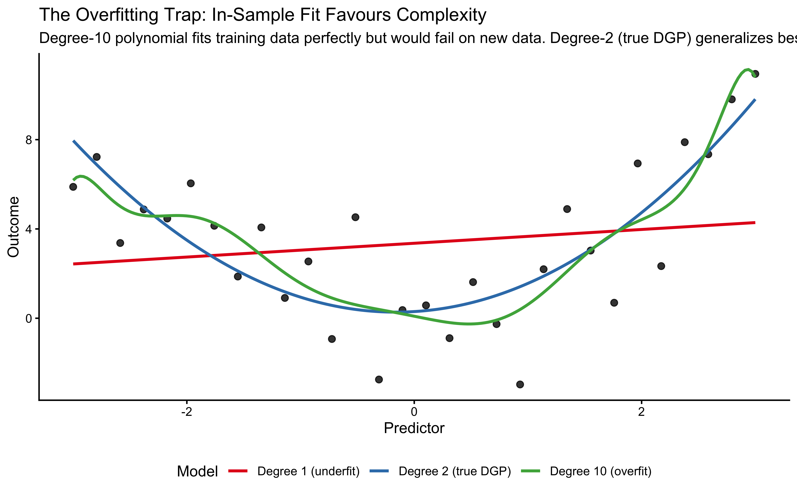
In this plot, we generated data from a quadratic curve with added noise. A linear model (red) underfits, missing a crucial feature of the data: the curvature. A degree-10 polynomial (green) overfits the data: it captures the curvature, but also the noise, deviating here and there to capture each stray datapoint. The quadratic model (blue) captures the underlying trend without fitting every wiggle, representing a better balance.
The error these models make on the training data (e.g. root mean square error) monotonically decreases as we increase the complexity of the model (and the variance explained, \(R^2\), monotonically increases), and therefore we cannot use it to choose between models. We need a criterion that rewards genuine generalization: models that capture the signal without overfitting the noise.
8.2.1 The Concept of Cross-Validation
To find this balance between fitting and generalizing, we need a method to test how well our model performs on data it hasn’t seen yet. Since we usually only have one dataset, we artificially create “unseen” data by hiding parts of our dataset from the model during the training phase. This is the core concept of Cross-Validation (CV).
The general process is:
Split your data into a training set and a test set, respecting the structure in the data. E.g. if you have multiple participants, you might want to hold out entire participants for testing, rather than random trials, to test generalization to new individuals.
Fit (train) your model using only the training data.
Evaluate the model’s predictions on the hidden test data.
Repeat this process with different splits and average the performance.
8.2.1.1 K-Fold Cross-Validation
In K-Fold cross-validation, we divide the data into \(K\) equally sized subsets (folds). We train the model on \(K-1\) folds and test it on the remaining fold, repeating this until every fold has served as the test set exactly once.
# Visualization of k-fold cross-validation
n_data <- 20
cv_data <- tibble(index = 1:n_data, value = rnorm(n_data))
cv_data$fold <- sample(rep(1:5, length.out = n_data))
cv_viz_data <- tibble(
iteration = rep(1:5, each = n_data),
data_point = rep(1:n_data, 5),
role = ifelse(cv_data$fold[data_point] == iteration, "test", "train")
)
ggplot(cv_viz_data, aes(x = data_point, y = iteration, fill = role)) +
geom_tile(color = "white", linewidth = 0.5) +
scale_fill_manual(values = c("train" = "steelblue", "test" = "firebrick"),
name = "Data Role") +
labs(title = "K-Fold Cross-Validation (k=5)",
subtitle = "Each row is one iteration; the model must predict the red tiles.",
x = "Data Point", y = "Iteration") +
theme(panel.grid = element_blank(), legend.position = "bottom")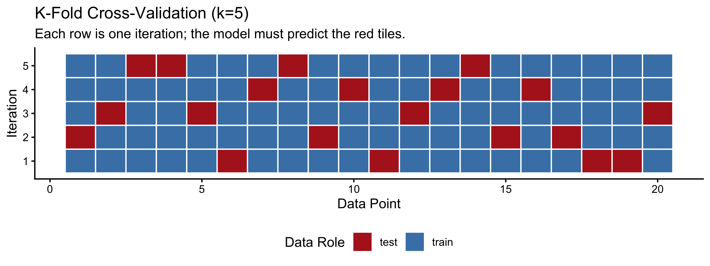
8.2.1.2 Leave-One-Out Cross-Validation (LOO-CV)
Leave-One-Out Cross-Validation (LOO-CV) is the extreme limit of K-Fold, where \(K\) equals the total number of data points (\(N\)). In each iteration, we hold out exactly one observation for testing and train the model on the remaining \(N-1\) observations.
loo_viz_data <- tibble(
iteration = rep(1:n_data, each = n_data),
data_point = rep(1:n_data, n_data),
role = ifelse(iteration == data_point, "test", "train")
)
ggplot(loo_viz_data, aes(x = data_point, y = iteration, fill = role)) +
geom_tile(color = "white", linewidth = 0.5) +
scale_fill_manual(values = c("train" = "steelblue", "test" = "firebrick"),
name = "Data Role") +
labs(title = "Leave-One-Out Cross-Validation",
subtitle = "Maximum training data used, but requires fitting the model N times.",
x = "Data Point", y = "Iteration") +
theme(panel.grid = element_blank(), legend.position = "bottom")
Cross-validation is especially important in cognitive Bayesian modeling for several reasons:
Bayesian models can be highly parameterized (especially hierarchical ones), making them prone to overfitting.
Prior choices can significantly influence a model’s predictive performance.
We often need to compare competing theoretical accounts of the same behavior.
However, implementing cross-validation for Bayesian models presents two key challenges that we must solve:
Proper Scoring: In standard machine learning, we might just calculate the mean squared error or accuracy on the test fold. But Bayesian models output probability distributions, not just point estimates. We need an appropriate metric for evaluating the quality of the full predictive distribution.
Computational Cost: For a dataset with 6,000 observations, true LOO-CV would require fitting our Stan model 6,000 separate times. Because MCMC sampling can take hours, exact LOO-CV is usually practically impossible.
In the next sections, we will solve the first challenge using the Expected Log Predictive Density (ELPD), and the second challenge using an elegant mathematical shortcut called PSIS-LOO.
8.3 Formalizing Predictive Accuracy: The ELPD
8.3.1 The Log-Score Proper Scoring Rule
Any model \(M\) can generate a predictive distribution: how likely different values of the outcome variable are estimated to be given the data it has seen and the model’s assumptions.
When an actual new outcome \(\tilde{y}_0\) is observed, we evaluate the model by checking exactly how much probability mass it assigned to the event that actually happened: \(p(\tilde{y}_0 \mid y, M)\).
We take the natural logarithm of this probability to compute the log-score: \[\text{log-score}(M, \tilde{y}_0) = \log p(\tilde{y}_0 \mid y, M)\]
We use the log scale for two primary reasons:
Additivity: The joint probability of independent future observations is the product of their individual probabilities. On the log scale, this becomes a sum, which is mathematically tractable and avoids computational underflow: probabilities being smaller than one being multiplied with each other become small very quickly and run into approximation issues, because computers use only a fixed number of decimals.
Information Theory: The negative log-score, \(-\log p(\tilde{y}_0 \mid y, M)\), is the surprisal or Shannon information content of the outcome under the model. Maximizing the log-score is equivalent to minimizing the model’s surprise.
We call the log-score a scoring rule: a function that provides a summary measure for the evaluation of probabilistic forecasts. A scoring rule is strictly proper if the model maximizes its expected score if and only if the probability distribution it outputs exactly matches the true data-generating distribution. This is a desirable property: a model cannot “game” the score by being strategically overconfident or underconfident. Overconfident models - those that assign near-zero probability to outcomes that then occur - incur unbounded penalties. A model that says “I am 99% certain this participant will choose right” and the participant chooses left will be penalized far more than a model that honestly said “I think it’s about 60%.”
You may have encountered Bayes Factors as a method for model comparison. Bayes Factors rely on the marginal likelihood—the probability of the data integrated over the entire prior. While theoretically elegant, Bayes Factors are notoriously sensitive to the exact width of priors and are often computationally impossible to calculate for the complex hierarchical models used in cognitive science. In this course, we rely on ELPD and Cross-Validation because they focus on predictive generalization, are more robust to prior choices, and provide trial-level diagnostics that Bayes Factors lack.
8.3.2 The Expected Log Predictive Density
The log-score evaluates a model on a single new observation. But what we really want is a summary over all possible future observations - a measure of how good the model would be in general, not just on one lucky or unlucky draw.
The Expected Log Predictive Density (ELPD) does exactly this: it averages the log-score over all possible future observations, weighted by how likely those observations are under the true data-generating distribution \(p_t\):
\[\text{ELPD} = \int p_t(\tilde{y}) \log p(\tilde{y} \mid y, M) \, d\tilde{y}\]
where \(p(\tilde{y} \mid y, M) = \int p(\tilde{y} \mid \theta) \, p(\theta \mid y) \, d\theta\) is the posterior predictive distribution - the model’s prediction for a new observation, averaged over the uncertainty in its parameters. The model with the highest ELPD makes the best average predictions across the full range of possible future data.
There is one crucial catch: we do not know \(p_t\) - the true distribution of future observations. If we did, we would not need a model in the first place! So we have to estimate the ELPD from the data we have. Leave-one-out cross-validation (LOO-CV) provides an approach that is asymptotically unbiased:
\[\widehat{\text{ELPD}}_{\text{LOO}} = \sum_{i=1}^{N} \log p(y_i \mid y_{-i}, M)\]
The notation \(y_{-i}\) means “all observations except observation \(i\)”. So for each data point, we ask: if the model had never seen this observation, how well would it predict it? A model that memorized \(y_i\) to reduce its training loss will be penalized here, because the LOO posterior is computed without \(y_i\). The prediction must generalize - it cannot cheat by peeking at the answer.
But how do we calculate it?
8.3.3 The Importance-Sampling Shortcut
Computing \(\widehat{\text{ELPD}}_{\text{LOO}}\) exactly would require fitting the model \(N\) times - once with each observation left out. For our hierarchical models with 50 agents and 120 trials each, that is 6,000 separate MCMC runs. This is not feasible in practice, especially when we get to more complex models.
Fortunately, there is an elegant mathematical shortcut, which is analogous to what we have seen when assessing prior sensitivity. The idea is to use the single full-data posterior we already have and to reweight its draws to approximate what the posterior would have looked like had we omitted observation \(i\). .
The mathematical weights that accomplish this reweighting are the inverse of the likelihood contributions: observations that the model fits well (high likelihood) get down-weighted when computing what the model “would have” predicted without them. These log-scale importance weights are simply the negative pointwise log-likelihoods:
\[\log r_i^{(s)} = -\log p(y_i \mid \theta^{(s)})\]
These are already stored in our Stan log_lik block from Chapter 6. So no additional computation is required: everything we need is already sitting in our existing model fits.
However, we should be careful. If the model’s estimate would barely change when we removing observation \(i\), then \(i\) is not very influential, and we can approximate the LOO estimate cheaply. If the model’s estimate would change a lot, then \(i\) is influential, and our approximation is less reliable. We therefore need to use a diagnostic to flag such cases: the Pareto-\(\hat{k}\), which we cover in detail in a later paragraph.
This combination of LOO cross-validation with Pareto-Smoothed Importance Sampling is called PSIS-LOO (Vehtari, Gelman & Gabry, 2017), and it is our primary tool for model comparison, so we’ll go through it step by step.
To really understand what the loo() function will do for us later, let’s look under the hood. We can simulate the PSIS-LOO process directly using the loo package’s internal engine. We will generate 1,000 simulated log-likelihood values, inject some extreme outliers to simulate a “shocked” model, and feed them directly into the actual loo::psis() algorithm.
We can then extract the smoothed weights and compare them to the raw weights to see exactly how the algorithm protects us from extreme MCMC draws.
n_draws <- 1000
n_draws <- 1000
# 1. Simulate realistic raw log-importance weights
# 995 well-behaved draws, and 5 massive breakaway outliers
log_w_raw <- c(rnorm(995, mean = 0, sd = 1), 10, 12, 14, 15, 18)
# 2. Apply the ACTUAL PSIS algorithm
psis_result <- loo::psis(log_w_raw, r_eff = 1)
# Print the diagnostic to prove we triggered the smoothing
cat("Pareto-k diagnostic from the real algorithm:", round(psis_result$diagnostics$pareto_k, 2), "\n")## Pareto-k diagnostic from the real algorithm: 1.76# Print the diagnostic to prove we triggered the smoothing
cat("Pareto-k diagnostic from the real algorithm:", round(psis_result$diagnostics$pareto_k, 2), "\n")## Pareto-k diagnostic from the real algorithm: 1.76# 3. Extract and normalize weights for visualization
# Raw weights
w_raw <- exp(log_w_raw)
w_raw_norm <- w_raw / sum(w_raw)
# Smoothed weights (must also be explicitly normalized)
w_smooth_raw <- exp(as.numeric(psis_result$log_weights))
w_smooth_norm <- w_smooth_raw / sum(w_smooth_raw)
# 4. Sort the weights from smallest to largest to visualize the "tail"
# We sort by the raw weights so we can see how the specific extreme indices change
sort_order <- order(w_raw_norm)
weight_data <- data.frame(
raw = w_raw_norm[sort_order],
smoothed = w_smooth_norm[sort_order]
)
# The PSIS algorithm smooths the top 3 * sqrt(S) weights.
# For S=1000, that is the top ~95 weights.
weight_data_top <- tail(weight_data, 150)
weight_data_top$rank <- 1:150
tail_start_x <- 150 - 95 + 0.5
# PLOT: Importance weights before and after Pareto smoothing
p_weights <- ggplot(weight_data_top, aes(x = rank)) +
# Arrows showing the shift computed by the real algorithm
geom_segment(aes(xend = rank, y = raw, yend = smoothed),
arrow = arrow(length = unit(0.2, "cm"), type = "closed"),
color = "purple", linewidth = 0.7, alpha = 0.7) +
# Points drawn on top
geom_point(aes(y = raw), color = "steelblue", size = 2, alpha = 0.8) +
geom_point(aes(y = smoothed), color = "purple", size = 2, alpha = 1.0) +
# Add a vertical line to show where the algorithm began smoothing
geom_vline(xintercept = tail_start_x, linetype = "dashed", color = "gray50") +
annotate("text", x = tail_start_x + 2, y = max(weight_data_top$raw) * 0.9,
label = "Algorithm begins\nsmoothing here", hjust = 0, color = "gray30") +
# Labels and styling
labs(title = "Actual PSIS Algorithm Smoothing (Top 150 Weights)",
subtitle = "The loo::psis() function compresses the extreme tail; remaining weights shift up to absorb the mass.",
x = "Rank of Weight (Zoomed in on the top 15%)", y = "Normalized Weight") +
theme_minimal()
# PLOT: Conceptual diagram of PSIS-LOO process
p_flow <- ggplot() +
annotate("rect", xmin = 0.5, xmax = 3.5, ymin = 4, ymax = 5, fill = "lightblue", alpha = 0.7) +
annotate("text", x = 2, y = 4.5, label = "1. Fit Model to All Data\nObtain posterior samples p(θ|y)") +
annotate("rect", xmin = 0.5, xmax = 3.5, ymin = 2.5, ymax = 3.5, fill = "lightgreen", alpha = 0.7) +
annotate("text", x = 2, y = 3, label = "2. Calculate Log-Likelihoods\nℓᵢ(θ) = log p(yᵢ|θ)") +
annotate("rect", xmin = 0.5, xmax = 3.5, ymin = 1, ymax = 2, fill = "lightyellow", alpha = 0.7) +
annotate("text", x = 2, y = 1.5, label = "3. Compute Importance Weights\nwᵢ(θ) ∝ 1/p(yᵢ|θ)") +
annotate("rect", xmin = 0.5, xmax = 3.5, ymin = -0.5, ymax = 0.5, fill = "mistyrose", alpha = 0.7) +
annotate("text", x = 2, y = 0, label = "4. Apply Pareto Smoothing\nStabilize extreme weights via loo::psis()") +
annotate("rect", xmin = 0.5, xmax = 3.5, ymin = -2, ymax = -1, fill = "lavender", alpha = 0.7) +
annotate("text", x = 2, y = -1.5, label = "5. Compute ELPD Using Weights\nApproximate leave-one-out prediction") +
annotate("segment", x = 2, y = c(4, 2.5, 1, -0.5), xend = 2, yend = c(3.5, 2, 0.5, -1),
arrow = arrow(length = unit(0.2, "cm"))) +
annotate("rect", xmin = 3.7, xmax = 5.7, ymin = -0.2, ymax = 1.5, fill = "white", color = "black", linetype = "dashed") +
annotate("text", x = 4.7, y = 1.2, label = "Pareto k Diagnostics", fontface = "bold") +
annotate("text", x = 4.7, y = 0.8, label = "k < 0.5: Reliable", color = "darkgreen") +
annotate("text", x = 4.7, y = 0.4, label = "0.5 < k < 0.7: Use caution", color = "darkorange") +
annotate("text", x = 4.7, y = 0, label = "k > 0.7: Unreliable", color = "darkred") +
theme_void() +
labs(title = "PSIS-LOO Process Flow")
p_weights / p_flow
Notice how a few random MCMC draws initially monopolize the raw importance weights (the high blue dots). If we calculated ELPD using those raw weights, our cross-validation score would be highly erratic and dictated by statistical noise. The Pareto smoothing (purple dots) gently compresses the extreme tail of these weights into a more stable distribution.
Mathematically, an extreme raw importance weight means the approximation is unstable. Cognitively, an extreme importance weight means the model is utterly shocked by this specific participant’s choice. We will use this dual mathematical/cognitive interpretation to flag influential observations later.
But first let’s get to the thick of it and start simulating data.
8.4 Simulation Setup for Model Recovery
We simulate two populations of agents playing against an opponent. However, we cannot use the constant 70%-right opponent from Chapter 6. Why? If a memory agent tracks a constant 70% rate, its internal memory signal quickly settles into a flat line. Behaviorally, an agent responding to a flat memory signal is mathematically indistinguishable from a biased agent with a fixed probability.
To break this near-unidentifiability, we use a reversal design: the opponent plays 80%-right for the first 60 trials, then abruptly switches to 20%-right for the remaining 60 trials. Memory agents will drastically shift their behavior at trial 61, while biased agents will not, making the two models theoretically separable.
Note on Recovery Failure: We simulate a population with a strong memory sensitivity (\(\mu_\beta = 1.5\)). If we instead simulated a population with very weak memory (\(\mu_\beta = 0.3\)), model recovery would likely fail. The behavioral difference would be so subtle that the rigid Biased model would win the ELPD comparison by default due to its lower complexity penalty.
The key insight for model recovery is that we now fit both models to both datasets, giving us a 2x2 matrix of fits:
- Biased model on biased data — the correctly-specified model.
- Memory model on biased data — the over-specified model. It has an extra parameter (\(\beta\)) it does not need.
- Biased model on memory data — the under-specified model. It lacks the flexibility to capture the reversal.
- Memory model on memory data — the correctly-specified model.
We will see PSIS-LOO at work step by step and assess whether it is doing its job: it should prefer the correct model in each column of this matrix. This is model recovery: the analogue of parameter recovery but one level of abstraction higher - instead of asking “can we recover the right parameter values?”, we ask “can we identify the right model?”
simulate_model_recovery_data <- function(
n_agents = 50, n_trials = 120,
mu_theta = 1.0, sigma_theta = 0.5,
mu_alpha = 0.0, mu_beta = 1.5,
sigma_alpha = 0.3, sigma_beta = 0.5,
rho = 0.3,
seed = 42
) {
set.seed(seed)
# Hardcoded reversal block design: 80% right for t 1:60, 20% right for t 61:120
opp_choices <- c(
rbinom(60, 1, 0.8),
rbinom(n_trials - 60, 1, 0.2)
)
# Perfect unweighted memory (cumulative average)
opp_rate_prev <- numeric(n_trials)
opp_rate_prev[1] <- 0.5
if (n_trials > 1) {
raw_rates <- cumsum(opp_choices[-n_trials]) / seq_len(n_trials - 1)
opp_rate_prev[-1] <- pmax(0.01, pmin(0.99, raw_rates)) # to avoid singularities
}
# Generating the hierarchical biased behaviors
# Generating the hierarchical biased behaviors
theta_j <- rnorm(n_agents, mu_theta, sigma_theta)
# Inject extreme outliers to naturally trigger high Pareto-k values
theta_j[1] <- 4.5 # Agent 1 is extremely biased right
theta_j[2] <- -4.5 # Agent 2 is extremely biased left
biased_data <- map_dfr(seq_len(n_agents), function(j) {
tibble(agent_id = j, trial = seq_len(n_trials),
choice = rbinom(n_trials, 1, plogis(theta_j[j])),
opp_rate_prev = opp_rate_prev, agent_type = "biased",
true_theta = theta_j[j])
})
# Generating the parameters for the hierarchical memory behaviors with correlation
## We follow the NCP parametrization to show you how, but also because it's more
## efficient for sampling correlated bias and beta.
## First we define the Cholesky factor for the correlation matrix:
L_Omega <- matrix(c(1, rho, 0, sqrt(1 - rho^2)), 2, 2)
## Then we need to convert it to the covariance matrix by pre-multiplying by
## the scale parameters (correlations are z-scored, so to get the actual
## values we need to put the scales back in):
Scale <- diag(c(sigma_alpha, sigma_beta)) %*% L_Omega
## Then we create a matrix of independent, standard normal draws
Z <- matrix(rnorm(2 * n_agents), 2, n_agents)
## Then we apply our rescaling to the standard normal draws and add the group-level means to get the individual-level parameters
indiv <- t(matrix(c(mu_alpha, mu_beta), ncol = 1) %*%
matrix(1, 1, n_agents) + Scale %*% Z)
## Then we generate the data for the memory model
memory_data <- map_dfr(seq_len(n_agents), function(j) {
logit_p <- indiv[j, 1] + indiv[j, 2] * qlogis(opp_rate_prev)
tibble(agent_id = j, trial = seq_len(n_trials),
choice = rbinom(n_trials, 1, plogis(logit_p)),
opp_rate_prev = opp_rate_prev, agent_type = "memory",
true_alpha = indiv[j, 1], true_beta = indiv[j, 2])
})
list(biased = biased_data, memory = memory_data,
hyperparams = list(mu_theta = mu_theta, sigma_theta = sigma_theta,
mu_alpha = mu_alpha, mu_beta = mu_beta,
sigma_alpha = sigma_alpha, sigma_beta = sigma_beta,
rho = rho))
}
sim_data_path <- here::here("simdata", "ch7_model_recovery_data.rds")
if (regenerate_simulations || !file.exists(sim_data_path)) {
sim_data <- simulate_model_recovery_data()
saveRDS(sim_data, sim_data_path)
} else {
sim_data <- readRDS(sim_data_path)
}
d_biased <- sim_data$biased
d_memory <- sim_data$memory
cat("Biased data: N =", nrow(d_biased), "from", n_distinct(d_biased$agent_id), "agents\n")## Biased data: N = 6000 from 50 agents## Memory data: N = 6000 from 50 agentsLet us visualize a sample of agents from both populations before fitting any models. This is a useful sanity check, and part of any sensible workflow. Check your data and simulations, folks!
sampled_agents <- bind_rows(d_biased, d_memory) |>
distinct(agent_type, agent_id) |>
group_by(agent_type) |>
slice_sample(n = 8) |>
ungroup()
bind_rows(d_biased, d_memory) |>
semi_join(sampled_agents, by = c("agent_type", "agent_id")) |>
arrange(agent_type, agent_id, trial) |>
group_by(agent_type, agent_id) |>
mutate(cum_rate = cumsum(choice) / trial) |>
ungroup() |>
ggplot(aes(x = trial, y = cum_rate, group = agent_id, color = agent_type)) +
geom_hline(yintercept = 0.5, linetype = "dashed", color = "gray60",
linewidth = 0.4) +
geom_line(alpha = 0.7, linewidth = 0.7) +
facet_wrap(~agent_type, labeller = as_labeller(
c(biased = "Biased Agents (fixed bias)",
memory = "Memory Agents (track opponent)"))) +
scale_color_brewer(palette = "Set1", guide = "none") +
scale_y_continuous(limits = c(0, 1), labels = scales::percent) +
labs(title = "Cumulative Choice Rates: Biased vs. Memory Agents",
subtitle = "Both play against a 70%-right opponent. Can you tell them apart by eye?",
x = "Trial", y = "Cumulative proportion 'right'")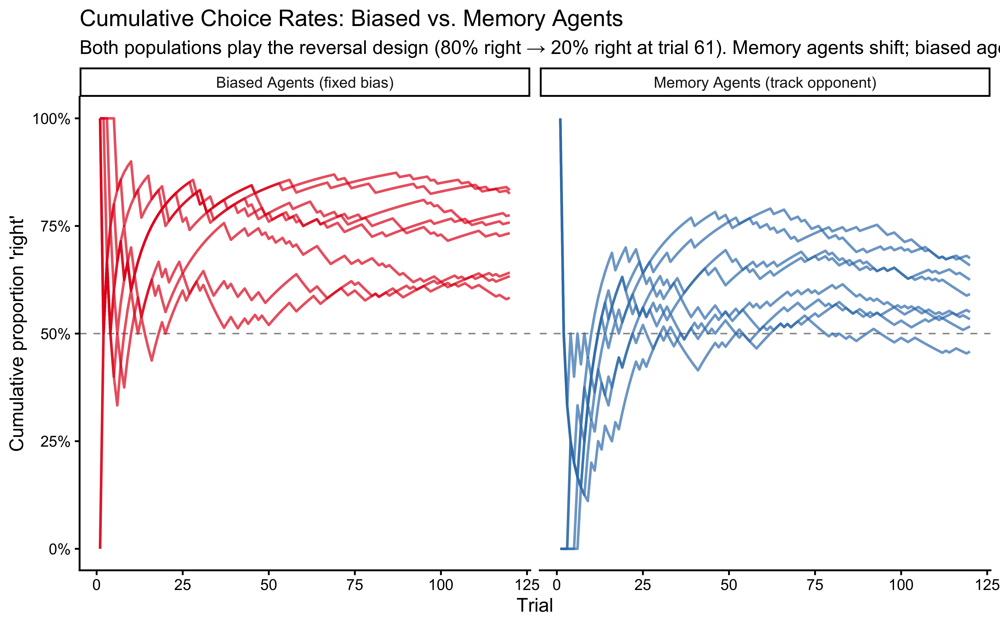
We should see a difference: Both populations initially drift upwards (rightwards in a sense) one because it is biased that way, the other because it initially plays against a 80%-right opponent. Memory agents then start drifting downwards as they track the reversal in the opponent’s behavior, while biased agents stabilize. But it is not always easy to tell them apart by eye, especially if we look at individual agents rather than averages. This is why we need formal model comparison techniques.
Now we prepare the four Stan data lists for our 2x2 comparison. Note that when fitting the memory model we need to add the opp_rate_prev even to the biased-generated data, as the model requires it.
make_stan_biased <- function(d)
list(N = nrow(d), J = n_distinct(d$agent_id),
agent = d$agent_id, h = as.integer(d$choice))
make_stan_memory <- function(d)
list(N = nrow(d), J = n_distinct(d$agent_id),
agent = d$agent_id, h = as.integer(d$choice),
opp_rate_prev = d$opp_rate_prev)
sd_biased_on_biased <- make_stan_biased(d_biased)
sd_memory_on_biased <- make_stan_memory(d_biased)
sd_biased_on_memory <- make_stan_biased(d_memory)
sd_memory_on_memory <- make_stan_memory(d_memory)We reuse the NCP Stan models from Chapter 6. The key feature we need for model comparison is the log_lik vector in the generated quantities block - this is the pointwise log-likelihood for each observation that PSIS-LOO requires. This is why we designed those models with log_lik from the beginning: the Chapter 6 workflow was already leading here.
stan_file_biased <- here::here("stan", "ch6_multilevel_biased_ncp.stan")
if (!file.exists(stan_file_biased)) {
writeLines('
data { int<lower=1> N; int<lower=1> J;
array[N] int<lower=1,upper=J> agent;
array[N] int<lower=0,upper=1> h; }
parameters { real mu_theta; real<lower=0> sigma_theta; vector[J] z_theta; }
transformed parameters { vector[J] theta_logit = mu_theta + z_theta*sigma_theta; }
model {
target += normal_lpdf(mu_theta|0,1.5);
target += exponential_lpdf(sigma_theta|1);
target += std_normal_lpdf(z_theta);
target += bernoulli_logit_lpmf(h|theta_logit[agent]); }
generated quantities {
real lprior = normal_lpdf(mu_theta|0,1.5)+exponential_lpdf(sigma_theta|1)
+ std_normal_lpdf(z_theta);
vector[N] log_lik; array[N] int h_post_rep;
for (i in 1:N) {
log_lik[i] = bernoulli_logit_lpmf(h[i]|theta_logit[agent[i]]);
h_post_rep[i] = bernoulli_logit_rng(theta_logit[agent[i]]); } }',
stan_file_biased)
}
stan_file_memory <- here::here("stan", "ch6_multilevel_memory_ncp.stan")
if (!file.exists(stan_file_memory)) {
writeLines('
data { int<lower=1> N; int<lower=1> J;
array[N] int<lower=1,upper=J> agent; array[N] int<lower=0,upper=1> h;
vector<lower=0.01,upper=0.99>[N] opp_rate_prev; }
parameters {
real mu_alpha; real mu_beta; vector<lower=0>[2] sigma;
cholesky_factor_corr[2] L_Omega; matrix[2,J] z; }
transformed parameters {
matrix[J,2] indiv_params;
{ matrix[2,J] dev = diag_pre_multiply(sigma,L_Omega)*z;
for (j in 1:J) {
indiv_params[j,1] = mu_alpha+dev[1,j];
indiv_params[j,2] = mu_beta+dev[2,j]; } } }
model {
target += normal_lpdf(mu_alpha|0,1); target += normal_lpdf(mu_beta|0,1);
target += exponential_lpdf(sigma|1);
target += lkj_corr_cholesky_lpdf(L_Omega|2);
target += std_normal_lpdf(to_vector(z));
vector[N] logit_p;
for (i in 1:N)
logit_p[i] = indiv_params[agent[i],1]
+ indiv_params[agent[i],2]*logit(opp_rate_prev[i]);
target += bernoulli_logit_lpmf(h|logit_p); }
generated quantities {
matrix[2,2] Omega = multiply_lower_tri_self_transpose(L_Omega);
real rho = Omega[1,2];
real lprior = normal_lpdf(mu_alpha|0,1)+normal_lpdf(mu_beta|0,1)
+ exponential_lpdf(sigma|1)+lkj_corr_cholesky_lpdf(L_Omega|2)
+ std_normal_lpdf(to_vector(z));
vector[N] log_lik; array[N] int h_post_rep;
for (i in 1:N) {
real lp = indiv_params[agent[i],1]
+ indiv_params[agent[i],2]*logit(opp_rate_prev[i]);
log_lik[i] = bernoulli_logit_lpmf(h[i]|lp);
h_post_rep[i] = bernoulli_logit_rng(lp); } }',
stan_file_memory)
}
mod_biased_ncp <- cmdstan_model(stan_file_biased)
mod_memory_ncp <- cmdstan_model(stan_file_memory)
cat("Both NCP models compiled.\n")## Both NCP models compiled.8.5 Fitting the Four Model-Data Combinations
We now fit all four combinations. This is the computationally expensive step, but it only needs to be run once — thereafter, results are loaded from disk. The fit_or_load() helper encapsulates this logic.
fit_or_load <- function(label, model, data_list, file_path, init_fn, seed = 123) {
if (regenerate_simulations || !file.exists(file_path)) {
message("Fitting: ", label)
fit <- model$sample(
data = data_list, seed = seed, chains = 4, parallel_chains = 4,
iter_warmup = 1000, iter_sampling = 1000, init = init_fn(data_list),
adapt_delta = 0.90, max_treedepth = 12, refresh = 0)
fit$save_object(file_path)
} else {
fit <- readRDS(file_path)
message("Loaded: ", label)
}
fit
}
init_biased <- function(data_list) {
J <- data_list$J
lapply(1:4, function(i) list(mu_theta = rnorm(1,0,1.5),
sigma_theta = rexp(1,1), z_theta = rnorm(J,0,1)))
}
init_memory <- function(data_list) {
J <- data_list$J
lapply(1:4, function(i) list(
mu_alpha = rnorm(1,0,0.3), mu_beta = rnorm(1,0,0.3),
sigma = abs(rnorm(2,0,0.3)) + 0.1,
L_Omega = matrix(c(1,0,0,1), nrow = 2),
z = matrix(0, nrow = 2, ncol = J)))
}
fit_b_on_b <- fit_or_load("Biased->Biased", mod_biased_ncp, sd_biased_on_biased,
here::here("simmodels","ch7_fit_b_on_b.rds"), init_biased)
fit_m_on_b <- fit_or_load("Memory->Biased", mod_memory_ncp, sd_memory_on_biased,
here::here("simmodels","ch7_fit_m_on_b.rds"), init_memory)
fit_b_on_m <- fit_or_load("Biased->Memory", mod_biased_ncp, sd_biased_on_memory,
here::here("simmodels","ch7_fit_b_on_m.rds"), init_biased)
fit_m_on_m <- fit_or_load("Memory->Memory", mod_memory_ncp, sd_memory_on_memory,
here::here("simmodels","ch7_fit_m_on_m.rds"), init_memory)Before computing any model comparison statistics, we verify that all four fits pass the standard geometry diagnostics from Chapter 5. This step matters especially for the misspecified fits. When we fit the memory model to biased data, we are asking a model to find a memory-tracking signal where none exists - it may strain to do so, which can sometimes produce divergences or poor mixing.
If we find issues, we need to think critically. On the one hand, comparing a well fitted model to a poorly fitted one is not a strong test of their relative performance. On the other hand, if the misspecified model is so difficult to fit that it fails basic diagnostics, that is itself a sign of poor performance. So as we investigate the sources of the issues, we need to critically evaluate whether they are a sign of a fundamental mismatch between the model and the data-generating mechanism or just a technical issue that can be resolved with more careful fitting.
Remember that we already run the full bayesian workflow on these models in the previous chapters, so here we only briefly check whether these new fitting processes show any sign of issues. If these were new models, we would need to do a thorough validation first!
fits <- list("Biased->Biased" = fit_b_on_b, "Memory->Biased" = fit_m_on_b,
"Biased->Memory" = fit_b_on_m, "Memory->Memory" = fit_m_on_m)
map_dfr(names(fits), function(label) {
f <- fits[[label]]
sm <- f$diagnostic_summary(quiet = TRUE)
# Compute both metrics in a single pass
post_summary <- summarise_draws(f$draws(), "rhat", "ess_bulk")
tibble(
Combination = label,
Divergences = sum(sm$num_divergent),
Max_Rhat = round(max(post_summary$rhat, na.rm = TRUE), 3),
Min_ESS_bulk = round(min(post_summary$ess_bulk, na.rm = TRUE), 0)
)
}) |>
knitr::kable(caption = "Required: Divergences=0, R-hat<1.01, ESS>400.")| Combination | Divergences | Max_Rhat | Min_ESS_bulk |
|---|---|---|---|
| Biased->Biased | 0 | 1.006 | 868 |
| Memory->Biased | 0 | 1.006 | 963 |
| Biased->Memory | 0 | 1.006 | 929 |
| Memory->Memory | 0 | 1.006 | 707 |
8.6 Computing PSIS-LOO
8.6.1 The Pareto-\(\hat{k}\) Diagnostic: Which Observations Are Influential?
The loo() function performs two critical operations: it estimates the Expected Log Predictive Density (ELPD) via Pareto-smoothed importance sampling, and it quantifies the mathematical reliability of this approximation using the Pareto-\(\hat{k}\) diagnostic.
Recall that PSIS-LOO approximates exact leave-one-out cross-validation by reweighting draws from the full-data posterior. The raw importance weights are the inverse of the pointwise likelihoods. If an observation \(y_i\) is highly unexpected by the model, its importance weight becomes astronomically large. If a few posterior draws capture most of the weight, the Monte Carlo approximation collapses (cannot represent the full dataset).
To stabilize this, the algorithm fits a Generalized Pareto Distribution to the right tail of these raw weights. The \(\hat{k}\) statistic is the estimated shape parameter of this distribution, directly measuring the heaviness of the tail. Conceptually, if removing a single trial would drastically shift the posterior, extreme importance weights are required to compensate, causing \(\hat{k}\) to blow up. Thus, \(\hat{k}\) serves two vital purposes:
Statistical diagnostic: It flags specific observations where the reweighting shortcut is mathematically unreliable.
Cognitive diagnostic: It identifies highly influential or surprising trials that violate the model’s structural expectations.
We execute the function with save_psis = TRUE to retain the smoothed weights matrix, which is strictly required for calibration checks later in the workflow (LOO-PIT, which will be explained then).
get_raw_loo <- function(fit_obj, file_path) {
if (regenerate_simulations || !file.exists(file_path)) {
message("Computing and saving raw LOO to ", file_path)
loo_obj <- fit_obj$loo(save_psis = TRUE)
saveRDS(loo_obj, file_path)
return(loo_obj)
} else {
message("Loading cached raw LOO from ", file_path)
return(readRDS(file_path))
}
}
loo_b_on_b <- get_raw_loo(fit_b_on_b, here::here("simmodels", "ch7_loo_raw_b_on_b.rds"))
loo_m_on_b <- get_raw_loo(fit_m_on_b, here::here("simmodels", "ch7_loo_raw_m_on_b.rds"))
loo_b_on_m <- get_raw_loo(fit_b_on_m, here::here("simmodels", "ch7_loo_raw_b_on_m.rds"))
loo_m_on_m <- get_raw_loo(fit_m_on_m, here::here("simmodels", "ch7_loo_raw_m_on_m.rds"))
summarise_pareto_k <- function(loo_obj, label) {
k <- loo_obj$diagnostics$pareto_k
p_loo <- loo_obj$estimates["p_loo","Estimate"]
n <- length(k)
tibble(Combination=label, N=n,
k_below_05=sum(k<0.5), k_05_07=sum(k>=0.5&k<0.7),
k_07_10=sum(k>=0.7&k<1), k_above_10=sum(k>=1),
Max_k=round(max(k),3),
p_hat_loo=round(p_loo,1), ratio=round(p_loo/n,3),
ELPD=round(loo_obj$estimates["elpd_loo","Estimate"],1),
SE=round(loo_obj$estimates["elpd_loo","SE"],1))
}
pareto_k_table <- bind_rows(
summarise_pareto_k(loo_b_on_b,"Biased->Biased"),
summarise_pareto_k(loo_m_on_b,"Memory->Biased"),
summarise_pareto_k(loo_b_on_m,"Biased->Memory"),
summarise_pareto_k(loo_m_on_m,"Memory->Memory"))
knitr::kable(pareto_k_table,
caption = paste("Pareto-k diagnostics. ratio = p_hat_loo/N measures model",
"complexity relative to dataset size - we will use this for LOO-PIT below."))| Combination | N | k_below_05 | k_05_07 | k_07_10 | k_above_10 | Max_k | p_hat_loo | ratio | ELPD | SE |
|---|---|---|---|---|---|---|---|---|---|---|
| Biased->Biased | 6000 | 6000 | 0 | 0 | 0 | 0.162 | 41.1 | 0.007 | -3393.8 | 36.0 |
| Memory->Biased | 6000 | 5998 | 2 | 0 | 0 | 0.521 | 47.0 | 0.008 | -3395.1 | 36.0 |
| Biased->Memory | 6000 | 6000 | 0 | 0 | 0 | 0.190 | 35.6 | 0.006 | -4038.3 | 15.4 |
| Memory->Memory | 6000 | 5969 | 25 | 6 | 0 | 0.759 | 61.7 | 0.010 | -3700.3 | 27.3 |
The action we take depends on how large \(\hat{k}\) is. The thresholds below correspond roughly to how well the Pareto distribution fits the tail of the importance weights — which determines how reliable the approximation is:
| \(\hat{k}\) | Interpretation | Action |
|---|---|---|
| \(< 0.5\) | Reliable | Accept PSIS-LOO |
| \([0.5, 0.7)\) | Acceptable | But proceed with caution |
| \([0.7, 1.0)\) | Problematic | Apply loo_moment_match() first |
| \(\geq 1.0\) | Very problematic | Use actual K-fold |
The loo_moment_match() refits the model excluding the influential observations one by one, and assesses their out-of-sample error under the refitted model. This brings two concerns: i) computational feasibility: can we actually afford to refit the model multiple times? ii) if there are multiple influential observations, they might not be independent and only removing one would not capture the full influence of whatever is causing the underlying issue. So once again, we need to be critical and do our detective work. However, this time we are lucky and it seems all is in place.
Notice also the p_hat_loo and ratio columns. These are the effective number of parameters estimated by LOO and its ratio to total observations - we will need these shortly when checking LOO-PIT calibration.
The Effective Number of Parameters (\(\hat{p}_{\text{loo}}\)): You may be familiar with Information Criteria like AIC or BIC, which penalize models based on their raw parameter count (\(k\)). In Bayesian hierarchical models, the “true” number of parameters is ambiguous because of shrinkage. Instead, \(\hat{p}_{\text{loo}}\) measures the model’s optimism: the difference between how well the model fits the training data vs. how well it predicts held-out data.\(\hat{p}_{\text{loo}} \approx\) total parameters: The model is learning very little from the population prior.\(\hat{p}_{\text{loo}} <\) total parameters: The hierarchical prior is effectively “narrowing” the model’s flexibility.PSIS-LOO is essentially a more robust version of WAIC (Widely Applicable Information Criterion) that includes the Pareto-\(\hat{k}\) diagnostic to tell you when the penalty is unreliable.
The ratio \(\hat{p}_{\text{loo}}/N\) tells us the effective flexibility per observation. This metric is critical for our next step: checking predictive calibration via LOO-PIT. If this ratio is non-negligible, removing a single observation drastically shifts the posterior, meaning our \(N\) leave-one-out predictive distributions are highly correlated. As Tesso and Vehtari (2026) demonstrated, this dependency invalidates standard statistical tests for uniformity. We will explicitly rely on this ratio to justify using specialized dependent-PIT tests (like POT-C) to accurately diagnose model calibration.
8.6.2 Characterizing Influential Observations: Why Are They Influential?
Finding that some observations have high \(\hat{k}\) is only the beginning of the story. The scientifically interesting question is why those particular observations are influential. In a hierarchical cognitive model, there are two structurally distinct reasons an observation might be hard to predict, with different theoretical implications:
The agent is an outlier from the population. Their individual parameters (say, a very high memory sensitivity \(\beta_j\)) are far from the population mean. The model is surprised by their behavior not because anything unusual happened on that trial, but because the hierarchical prior, which uses all other agents to constrain this agent’s parameters, is pulling the estimate toward the center. Finding this pattern suggests the population-level variance may be underestimated, or that some participants genuinely follow a different strategy than the majority.
The trial itself is unusual for that agent. Given the agent’s estimated parameters, this specific observation is surprising, perhaps the memory signal was strong (opponent rate 90%) and the model predicted the agent would strongly track it, but instead the agent chose randomly. This is a cognitively interesting failure: it identifies a trial where our model’s assumptions break down, potentially revealing strategic flexibility, lapses of attention, or simply that agents sometimes deviate from their average behavior (e.g. becoming distracted).
To distinguish these two causes, we join the \(\hat{k}\) values back to the raw data and look for structure across three dimensions: agent identity, trial position, and the strength of the memory signal.
k_mem_on_mem <- tibble(
k = loo_m_on_m$diagnostics$pareto_k,
agent_id = d_memory$agent_id,
trial = d_memory$trial,
opp_rate_prev = d_memory$opp_rate_prev,
fit = "Memory -> Memory")
k_bias_on_mem <- tibble(
k = loo_b_on_m$diagnostics$pareto_k,
agent_id = d_memory$agent_id,
trial = d_memory$trial,
opp_rate_prev = d_memory$opp_rate_prev,
fit = "Biased -> Memory")
k_annotated <- bind_rows(k_mem_on_mem, k_bias_on_mem)
# -- Panel 1: Does influence cluster within specific agents? -------------------
p_by_agent <- k_annotated |>
group_by(fit, agent_id) |>
summarise(n_high = sum(k >= 0.5), .groups = "drop") |>
ggplot(aes(x = reorder(factor(agent_id), -n_high),
y = n_high, fill = fit)) +
geom_col(position = "dodge") +
scale_fill_brewer(palette = "Set1", name = NULL) +
labs(title = "High-k Observations per Agent (k >= 0.5)",
subtitle = paste("Concentration in specific agents suggests they deviate from",
"the population distribution."),
x = "Agent ID (sorted by count)", y = "Number of high-k trials") +
theme(axis.text.x = element_text(angle = 90, size = 6),
legend.position = "bottom")
# -- Panel 2: Does influence cluster at early trials? -------------------------
# Early trials have uninformative memory (opp_rate_prev ~= 0.5) so the
# memory model has nothing to predict from, making any outcome surprising.
p_by_trial <- ggplot(k_annotated, aes(x = trial, y = k, color = fit)) +
geom_point(size = 0.6, alpha = 0.3) +
geom_smooth(method = "gam", formula = y ~ s(x, bs = "cs"),
linewidth = 1, se = FALSE) +
geom_hline(yintercept = 0.5, linetype = "dashed", color = "gray40") +
scale_color_brewer(palette = "Set1", name = NULL) +
labs(title = "Pareto-k by Trial Position",
subtitle = paste("Both models should show higher k early: the memory signal",
"is uninformative (opp_rate ~= 0.5) so predictions are uncertain."),
x = "Trial", y = expression(hat(k))) +
theme(legend.position = "bottom")
# -- Panel 3: Does influence cluster at extreme opponent rates? ----------------
# When opp_rate_prev is extreme (near 0 or 1), the memory model makes a
# strong, confident prediction. If the agent does not follow the signal,
# k will be high -- these are the most cognitively informative failures.
p_by_opp <- ggplot(k_annotated, aes(x = opp_rate_prev, y = k, color = fit)) +
geom_point(size = 0.6, alpha = 0.3) +
geom_smooth(method = "gam", formula = y ~ s(x, bs = "cs"),
linewidth = 1, se = FALSE) +
geom_hline(yintercept = 0.5, linetype = "dashed", color = "gray40") +
scale_color_brewer(palette = "Set1", name = NULL) +
labs(title = "Pareto-k by Opponent's Running Rate",
subtitle = paste("At extreme rates the memory model makes confident predictions.",
"High k here = the agent did not follow the signal."),
x = "Opponent running choice rate (the memory signal)",
y = expression(hat(k))) +
theme(legend.position = "bottom")
p_by_agent / p_by_trial / p_by_opp +
plot_annotation(title = "Characterizing Influential Observations",
subtitle = paste("Reading all three panels together reveals the cognitive structure",
"of model influence:\n",
"Panel 1: person-level outliers | Panel 2: temporal learning effects |",
"Panel 3: overconfident predictions"))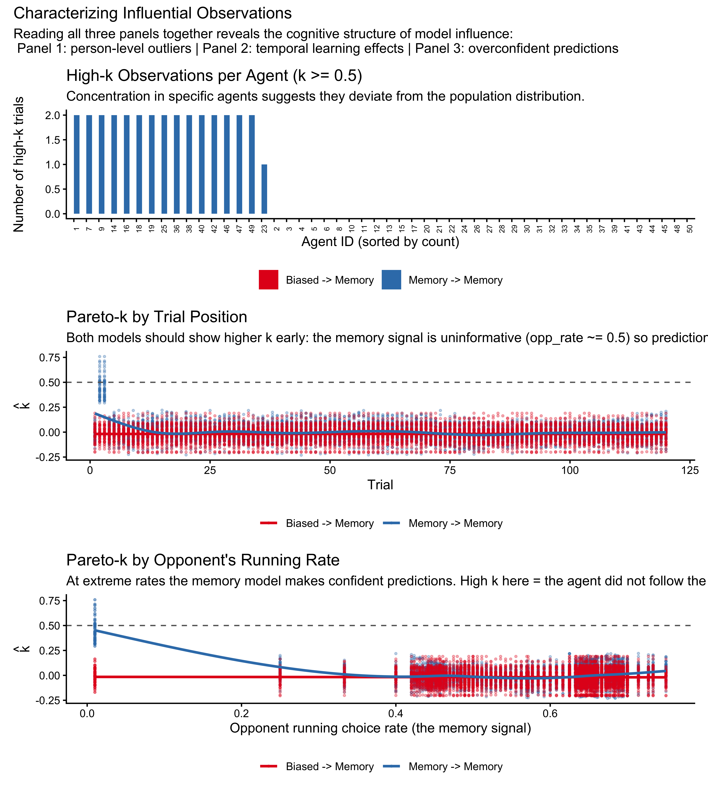
Reading these three panels together, we can build a cognitive story about model influence.
Panel 1 tells us whether specific agents are outliers from the group — if a handful of agents account for most of the high-\(\hat{k}\) observations, those individuals may be genuinely using a different strategy from the majority.
Panel 2 tells us whether the model struggles early in a session, before it has accumulated useful opponent history: at trial 1, the running opponent rate is exactly 0.5 (the model knows nothing about the opponent), so any outcome is equally surprising — this is expected and not a sign of model failure.
Panel 3 is the most cognitively interesting: when the opponent’s running rate is extreme (say, 90% right), the memory model predicts the agent will strongly track this. If instead the agent chose randomly or in the opposite direction, the model is very surprised — \(\hat{k}\) spikes.
These are cognitively informative failures: they identify trials where our model’s assumption that agents track opponent history breaks down. In our concrete case, we see that early trials are the most problematic. Given the relatively high bias in the opponent and the few trials, memory can quickly go to the extreme values and the model has a hard time dealing with that.
But let’s imagine we saw some agents being particularly influential — say, they had 10+ high-\(\hat{k}\) observations. This would suggest that those agents are outliers from the population distribution — perhaps they have a very high memory sensitivity \(\beta_j\) that the hierarchical prior is struggling to accommodate. In this case, we would want to look at the posterior estimates for those agents and see if they indeed have extreme parameter values. We could also consider refitting the model with a more flexible hierarchical structure (e.g., heavier-tailed distributions) or even excluding those agents if we believe they represent a qualitatively different strategy.
# 1. Extract estimated parameters and transform to probability space (Median and 90% HDI)
agent_estimates <- fit_m_on_m$draws("indiv_params") |>
spread_draws(indiv_params[agent_id, param_idx]) |>
# Pivot to have alpha and beta in the same row per draw
pivot_wider(names_from = param_idx, values_from = indiv_params, names_prefix = "param_") |>
rename(alpha = param_1, beta = param_2) |>
mutate(
# Probability transformations evaluated at experimental block extremes
p_bias = plogis(alpha), # Baseline probability (opp = 0.5)
p_block1 = plogis(alpha + beta * qlogis(0.8)), # Prob of Right during 80% block
p_block2 = plogis(alpha + beta * qlogis(0.2)) # Prob of Right during 20% block
) |>
pivot_longer(
cols = c(alpha, beta, p_bias, p_block1, p_block2),
names_to = "metric",
values_to = "value"
) |>
group_by(agent_id, metric) |>
median_hdi(value, .width = 0.90) |>
# Format as "Median [Lower, Upper]"
mutate(estimate_label = sprintf("%.2f [%.2f, %.2f]", value, .lower, .upper)) |>
select(agent_id, metric, estimate_label) |>
pivot_wider(names_from = metric, values_from = estimate_label, names_prefix = "est_")
# 2. Extract true parameters and compute true probabilities
agent_truths <- d_memory |>
distinct(agent_id, true_alpha, true_beta) |>
mutate(
true_p_bias = round(plogis(true_alpha), 2),
true_p_block1 = round(plogis(true_alpha + true_beta * qlogis(0.8)), 2),
true_p_block2 = round(plogis(true_alpha + true_beta * qlogis(0.2)), 2),
true_alpha = round(true_alpha, 2),
true_beta = round(true_beta, 2)
)
# 3. Join with the Pareto-k summary
k_annotated |>
filter(fit == "Memory -> Memory") |>
group_by(agent_id) |>
summarise(
n_high_k = sum(k >= 0.5),
max_k = round(max(k), 3),
.groups = "drop"
) |>
arrange(desc(n_high_k)) |>
slice_head(n = 8) |>
left_join(agent_truths, by = "agent_id") |>
left_join(agent_estimates, by = "agent_id") |>
# Select columns in a logical display order
select(
agent_id, n_high_k, max_k,
starts_with("true_alpha"), starts_with("est_alpha"),
starts_with("true_beta"), starts_with("est_beta"),
starts_with("true_p_block1"), starts_with("est_p_block1"),
starts_with("true_p_block2"), starts_with("est_p_block2")
) |>
knitr::kable(caption = paste(
"Top 8 agents by number of high-k observations.",
"Probability space metrics (p_block1, p_block2) demonstrate agent determinism at environmental extremes.",
"Values near 1.00 or 0.00 with narrow HDIs indicate near-deterministic behavioral expectations,",
"which might trigger high Pareto-k values upon any contradictory response."
))| agent_id | n_high_k | max_k | true_alpha | est_alpha | true_beta | est_beta | true_p_block1 | est_p_block1 | true_p_block2 | est_p_block2 |
|---|---|---|---|---|---|---|---|---|---|---|
| 1 | 2 | 0.518 | 0.11 | 0.17 [-0.13, 0.48] | 1.37 | 1.33 [0.77, 1.93] | 0.88 | 0.88 [0.80, 0.95] | 0.14 | 0.16 [0.05, 0.30] |
| 7 | 2 | 0.620 | -0.15 | -0.12 [-0.40, 0.16] | 1.12 | 1.27 [0.74, 1.82] | 0.80 | 0.84 [0.74, 0.92] | 0.15 | 0.13 [0.05, 0.25] |
| 9 | 2 | 0.651 | -0.32 | -0.40 [-0.70, -0.08] | 1.28 | 1.58 [0.97, 2.17] | 0.81 | 0.86 [0.77, 0.94] | 0.11 | 0.07 [0.01, 0.14] |
| 14 | 2 | 0.673 | -0.17 | -0.20 [-0.50, 0.10] | 1.95 | 1.91 [1.29, 2.51] | 0.93 | 0.92 [0.86, 0.97] | 0.05 | 0.06 [0.01, 0.11] |
| 16 | 2 | 0.714 | 0.26 | 0.19 [-0.12, 0.48] | 1.45 | 1.78 [1.17, 2.40] | 0.91 | 0.93 [0.88, 0.98] | 0.15 | 0.09 [0.03, 0.19] |
| 18 | 2 | 0.511 | 0.04 | 0.13 [-0.16, 0.42] | 1.47 | 1.38 [0.81, 1.97] | 0.89 | 0.89 [0.81, 0.95] | 0.12 | 0.14 [0.05, 0.27] |
| 19 | 2 | 0.759 | -0.08 | -0.35 [-0.69, -0.03] | 1.65 | 2.20 [1.58, 2.91] | 0.90 | 0.94 [0.89, 0.98] | 0.09 | 0.03 [0.01, 0.07] |
| 25 | 2 | 0.702 | 0.43 | 0.26 [-0.06, 0.57] | 1.90 | 2.04 [1.36, 2.66] | 0.96 | 0.96 [0.92, 0.99] | 0.10 | 0.07 [0.02, 0.16] |
8.6.3 Moment Matching for Problematic Observations
When some observations have \(\hat{k} \geq 0.7\), the standard PSIS approximation is unreliable for those specific data points. The first line of defense is moment matching (Paananen et al., 2021): a method that refines the importance weights by applying a transformation to the posterior draws so that the moments of the reweighted distribution better match what the LOO posterior should look like.
Think of it as improving the reweighting without running a full MCMC from scratch. Instead of asking “what would the posterior look like if we had never seen observation \(i\)?”, moment matching asks “can we adjust the existing draws so they better approximate that LOO posterior?” This is substantially cheaper than refitting and works well for moderately influential observations. Only if moment matching fails to bring \(\hat{k}\) below 1.0 should we resort to agent-level K-fold cross-validation (which we implement next).
apply_moment_match_if_needed <- function(loo_obj, fit_obj, label, file_path) {
# 1. If the cached file exists, load it immediately
if (!regenerate_simulations && file.exists(file_path)) {
message(label, ": Loading cached LOO...")
return(readRDS(file_path))
}
n_bad <- sum(loo_obj$diagnostics$pareto_k >= 0.7)
if (n_bad == 0) {
message(label, ": All k < 0.7. PSIS-LOO is reliable.")
saveRDS(loo_obj, file_path)
return(loo_obj)
}
message(label, ": WARNING! ", n_bad, " observations with k >= 0.7.")
message(" Running CmdStanR moment matching to refine importance weights...")
# 2. Run the actual moment matching algorithm
# (Requires cmdstanr >= 0.7.0 and models that can be unconstrained)
loo_mm <- loo::loo_moment_match(
fit_obj,
loo = loo_obj
)
message(" Max k reduced from ", round(max(loo_obj$diagnostics$pareto_k), 2),
" to ", round(max(loo_mm$diagnostics$pareto_k), 2))
saveRDS(loo_mm, file_path)
return(loo_mm)
}
# Execute the caching function
loo_b_on_b <- apply_moment_match_if_needed(loo_b_on_b, fit_b_on_b, "Biased->Biased", here::here("simmodels", "ch7_loo_mm_b_on_b.rds"))
loo_m_on_b <- apply_moment_match_if_needed(loo_m_on_b, fit_m_on_b, "Memory->Biased", here::here("simmodels", "ch7_loo_mm_m_on_b.rds"))
loo_b_on_m <- apply_moment_match_if_needed(loo_b_on_m, fit_b_on_m, "Biased->Memory", here::here("simmodels", "ch7_loo_mm_b_on_m.rds"))
loo_m_on_m <- apply_moment_match_if_needed(loo_m_on_m, fit_m_on_m, "Memory->Memory", here::here("simmodels", "ch7_loo_mm_m_on_m.rds"))8.6.4 The Limits of PSIS: Agent-Level LOO
If cognitive scientists are primarily interested in generalizing to new participants, you might wonder: why can’t we just calculate PSIS-LOO at the participant level?
We actually can. To do this, we simply take our trial-level log-likelihood matrix and sum the log-likelihoods of all 120 trials for each agent before passing the matrix to the loo() function. This asks the PSIS algorithm to approximate what the posterior would look like if an entire agent’s dataset had been excluded.
Let’s try this on our well-fitting Memory -> Memory model.
# 1. Extract the trial-level log-likelihood matrix (S draws x N trials)
ll_trial_m <- fit_m_on_m$draws("log_lik", format = "matrix")
# 2. Create an empty matrix for agent-level log-likelihoods (S draws x J agents)
J <- n_distinct(d_memory$agent_id)
S <- nrow(ll_trial_m)
ll_agent_m <- matrix(0, nrow = S, ncol = J)
# 3. Sum the trial log-likelihoods for each agent
for (j in 1:J) {
# Find which columns in the trial matrix belong to agent j
trial_cols <- which(d_memory$agent_id == j)
# Sum across those columns for every MCMC draw
ll_agent_m[, j] <- rowSums(ll_trial_m[, trial_cols])
}
# 4. Run PSIS-LOO at the agent level
loo_agent_m <- loo::loo(ll_agent_m)
print(loo_agent_m)##
## Computed from 4000 by 50 log-likelihood matrix.
##
## Estimate SE
## elpd_loo -3711.2 48.6
## p_loo 57.1 4.1
## looic 7422.4 97.2
## ------
## MCSE of elpd_loo is NA.
## MCSE and ESS estimates assume independent draws (r_eff=1).
##
## Pareto k diagnostic values:
## Count Pct. Min. ESS
## (-Inf, 0.7] (good) 12 24.0% 136
## (0.7, 1] (bad) 30 60.0% <NA>
## (1, Inf) (very bad) 8 16.0% <NA>
## See help('pareto-k-diagnostic') for details.I f you run this code, the console should scream at you with warnings. You will see that a massive percentage of the Pareto-\(\hat{k}\) values are \(> 0.7\), and many are \(> 1.0\).This is a spectacular mathematical failure, and it teaches us a crucial lesson about the limits of Importance Sampling. The PSIS shortcut only works when the “Leave-One-Out” posterior is relatively similar to the full-data posterior. Removing a single trial from a dataset of 6,000 barely shifts the parameters. But removing an entire agent (and their 120 unique trials) radically changes the population-level estimates. The shortcut completely breaks down because the full-data posterior simply does not contain enough information about what the population would look like without that agent. This failure provides the exact justification for our next step. When we want to test generalization to new agents, we are forced to abandon the PSIS shortcut entirely and perform exact cross-validation.
8.7 Agent-Level K-Fold: Generalizing to New Participants
Cross-validation requires us to make a fundamental choice: what defines a “data point” when we hold data out?
Up until now, we have performed trial-level cross-validation using the PSIS-LOO shortcut. Trial-level CV asks: “How well does the model predict a held-out trial for a participant whose other 119 trials we have already observed and learned from?”
But cognitive scientists usually want to answer a different question: “How well does the model generalize to completely new participants?”. To answer this, we must perform agent-level cross-validation, holding out entire individuals from the training set.
It is crucial to understand that the level of cross-validation (trial vs. agent) is entirely separate from the computational method we use (PSIS approximation vs. exact refitting).
In theory, we could perform agent-level LOO-CV (Leave-One-Agent-Out). We could even try to use our PSIS mathematical shortcut to do it without refitting the model. However, leaving out an entire agent’s worth of data (120 trials) radically changes the shape of the posterior distribution. When the LOO posterior is that different from the full-data posterior, the PSIS importance weights become wildly unstable (\(\hat{k} \gg 1.0\)), and the shortcut completely fails.
Therefore, when we want to test generalization to new agents, we are forced to abandon the PSIS shortcut and perform exact cross-validation, where we actually recompile and refit the Stan model on the training splits. Because exact Leave-One-Agent-Out would require fitting the model \(J=50\) times, we compromise to save computation time and use exact agent-level K-fold CV.
In agent-level K-fold, we hold out \(1/K\) of the agents entirely from the training set, fit the model to the remaining agents, and then ask: given only the population parameters estimated from the training group, how well can we predict the held-out strangers’ behavior?
# 1. Biased K-Fold Model
# Draws ONE parameter per test agent from the population distribution.
writeLines("
data {
int<lower=1> N_train;
int<lower=1> J_train;
array[N_train] int<lower=1, upper=J_train> agent_train;
array[N_train] int<lower=0, upper=1> h_train;
int<lower=1> N_test;
int<lower=1> J_test;
array[N_test] int<lower=1, upper=J_test> agent_test;
array[N_test] int<lower=0, upper=1> h_test;
}
parameters {
real mu_theta;
real<lower=0> sigma_theta;
vector[J_train] z_theta;
}
transformed parameters {
vector[J_train] theta_logit = mu_theta + z_theta * sigma_theta;
}
model {
target += normal_lpdf(mu_theta | 0, 1.5);
target += exponential_lpdf(sigma_theta | 1);
target += std_normal_lpdf(z_theta);
target += bernoulli_logit_lpmf(h_train | theta_logit[agent_train]);
}
generated quantities {
vector[J_test] theta_new;
vector[N_test] log_lik_test;
for (j in 1:J_test) {
theta_new[j] = normal_rng(mu_theta, sigma_theta);
}
for (n in 1:N_test) {
log_lik_test[n] = bernoulli_logit_lpmf(h_test[n] | theta_new[agent_test[n]]);
}
}", here::here("stan", "ch7_biased_kfold.stan"))
# 2. Memory K-Fold Model
# Samples correlated parameter pairs for each test agent from the population prior.
writeLines("
data {
int<lower=1> N_train;
int<lower=1> J_train;
array[N_train] int<lower=1, upper=J_train> agent_train;
array[N_train] int<lower=0, upper=1> h_train;
vector<lower=0.01, upper=0.99>[N_train] opp_rate_prev_train;
int<lower=1> N_test;
int<lower=1> J_test;
array[N_test] int<lower=1, upper=J_test> agent_test;
array[N_test] int<lower=0, upper=1> h_test;
vector<lower=0.01, upper=0.99>[N_test] opp_rate_prev_test;
}
parameters {
real mu_alpha;
real mu_beta;
vector<lower=0>[2] sigma;
cholesky_factor_corr[2] L_Omega;
matrix[2, J_train] z;
}
transformed parameters {
matrix[J_train, 2] indiv_params;
{
matrix[2, J_train] dev = diag_pre_multiply(sigma, L_Omega) * z;
for (j in 1:J_train) {
indiv_params[j, 1] = mu_alpha + dev[1, j];
indiv_params[j, 2] = mu_beta + dev[2, j];
}
}
}
model {
target += normal_lpdf(mu_alpha | 0, 1);
target += normal_lpdf(mu_beta | 0, 1);
target += exponential_lpdf(sigma | 1);
target += lkj_corr_cholesky_lpdf(L_Omega | 2);
target += std_normal_lpdf(to_vector(z));
vector[N_train] logit_p;
for (i in 1:N_train) {
logit_p[i] = indiv_params[agent_train[i], 1] +
indiv_params[agent_train[i], 2] * logit(opp_rate_prev_train[i]);
}
target += bernoulli_logit_lpmf(h_train | logit_p);
}
generated quantities {
matrix[2, J_test] new_indiv;
vector[N_test] log_lik_test;
for (j in 1:J_test) {
vector[2] z_new;
z_new[1] = std_normal_rng();
z_new[2] = std_normal_rng();
vector[2] param_new = [mu_alpha, mu_beta]' + diag_pre_multiply(sigma, L_Omega) * z_new;
new_indiv[1, j] = param_new[1];
new_indiv[2, j] = param_new[2];
}
for (n in 1:N_test) {
real lp = new_indiv[1, agent_test[n]] +
new_indiv[2, agent_test[n]] * logit(opp_rate_prev_test[n]);
log_lik_test[n] = bernoulli_logit_lpmf(h_test[n] | lp);
}
}", here::here("stan", "ch7_memory_kfold.stan"))
mod_biased_kfold <- cmdstan_model(here::here("stan", "ch7_biased_kfold.stan"))
mod_memory_kfold <- cmdstan_model(here::here("stan", "ch7_memory_kfold.stan"))
cat("Both K-fold Stan models compiled.\n")## Both K-fold Stan models compiled.kfold_path <- here::here("simmodels","ch7_kfold_comparison.rds")
K <- 5; set.seed(21)
# We will run this on the Memory data to see the true model win out of sample
agent_ids <- sort(unique(d_memory$agent_id))
fold_assign <- sample(rep(1:K, length.out=length(agent_ids)))
agent_folds <- tibble(agent_id=agent_ids, fold=fold_assign)
if (regenerate_kfold || !file.exists(kfold_path)) {
message("Running 5-fold CV for Biased and Memory models. This takes a moment...")
kfold_list <- lapply(1:K, function(k) {
test_ids <- agent_folds$agent_id[agent_folds$fold == k]
train_ids <- agent_folds$agent_id[agent_folds$fold != k]
d_train <- d_memory |> filter(agent_id %in% train_ids) |>
mutate(agent_train = as.integer(factor(agent_id)))
d_test <- d_memory |> filter(agent_id %in% test_ids) |>
mutate(agent_test = as.integer(factor(agent_id)))
# Stan data lists
sdata_b <- list(
N_train = nrow(d_train), J_train = length(train_ids),
agent_train = d_train$agent_train, h_train = as.integer(d_train$choice),
N_test = nrow(d_test), J_test = length(test_ids),
agent_test = d_test$agent_test, h_test = as.integer(d_test$choice)
)
sdata_m <- list(
N_train = nrow(d_train), J_train = length(train_ids),
agent_train = d_train$agent_train, h_train = as.integer(d_train$choice),
opp_rate_prev_train = d_train$opp_rate_prev,
N_test = nrow(d_test), J_test = length(test_ids),
agent_test = d_test$agent_test, h_test = as.integer(d_test$choice),
opp_rate_prev_test = d_test$opp_rate_prev
)
# Fit models (using 2 chains to save rendering time)
fit_b <- mod_biased_kfold$sample(data = sdata_b, seed = 200+k, chains = 2,
parallel_chains = 2, iter_warmup = 1000,
iter_sampling = 1000, adapt_delta = 0.90, refresh = 0)
fit_m <- mod_memory_kfold$sample(data = sdata_m, seed = 300+k, chains = 2,
parallel_chains = 2, iter_warmup = 1000,
iter_sampling = 1000, adapt_delta = 0.90, refresh = 0)
ll_b <- fit_b$draws("log_lik_test", format = "matrix")
ll_m <- fit_m$draws("log_lik_test", format = "matrix")
idx <- which(d_memory$agent_id %in% test_ids)
list(ll_b = ll_b, ll_m = ll_m, indices = idx, k = k)
})
S_b <- nrow(kfold_list[[1]]$ll_b)
S_m <- nrow(kfold_list[[1]]$ll_m)
ll_kfold_b <- matrix(NA_real_, S_b, nrow(d_memory))
ll_kfold_m <- matrix(NA_real_, S_m, nrow(d_memory))
for (res in kfold_list) {
ll_kfold_b[, res$indices] <- res$ll_b
ll_kfold_m[, res$indices] <- res$ll_m
}
saveRDS(list(biased = ll_kfold_b, memory = ll_kfold_m), kfold_path)
} else {
kfold_res <- readRDS(kfold_path)
ll_kfold_b <- kfold_res$biased
ll_kfold_m <- kfold_res$memory
}
if (!any(is.na(ll_kfold_b))) {
elpd_kf_b <- loo::elpd(ll_kfold_b)
elpd_kf_m <- loo::elpd(ll_kfold_m)
cat("=== Trial-level LOO vs. Agent-level K-fold (Memory Data) ===\n\n")
cat(sprintf("Biased Model - PSIS-LOO: %.1f (SE=%.1f)\n",
loo_b_on_m$estimates["elpd_loo","Estimate"], loo_b_on_m$estimates["elpd_loo","SE"]))
cat(sprintf("Biased Model - K-fold: %.1f (SE=%.1f)\n\n",
elpd_kf_b$estimates["elpd","Estimate"], elpd_kf_b$estimates["elpd","SE"]))
cat(sprintf("Memory Model - PSIS-LOO: %.1f (SE=%.1f)\n",
loo_m_on_m$estimates["elpd_loo","Estimate"], loo_m_on_m$estimates["elpd_loo","SE"]))
cat(sprintf("Memory Model - K-fold: %.1f (SE=%.1f)\n\n",
elpd_kf_m$estimates["elpd","Estimate"], elpd_kf_m$estimates["elpd","SE"]))
cat("=== K-Fold Model Comparison ===\n")
print(loo::loo_compare(elpd_kf_m, elpd_kf_b))
}## === Trial-level LOO vs. Agent-level K-fold (Memory Data) ===
##
## Biased Model - PSIS-LOO: -4038.3 (SE=15.4)
## Biased Model - K-fold: -4075.0 (SE=12.8)
##
## Memory Model - PSIS-LOO: -3700.3 (SE=27.3)
## Memory Model - K-fold: -3773.2 (SE=25.2)
##
## === K-Fold Model Comparison ===
## elpd_diff se_diff
## model1 0.0 0.0
## model2 -301.7 22.2The Agent-Level K-fold ELPD will almost always be lower (worse) than the trial-level LOO ELPD for both models. This is mathematically expected and cognitively informative. Trial-level LOO asks: “How well can I predict trial 120 for an agent whose personal bias and memory sensitivity I have already estimated from 119 trials?” Agent-level K-fold asks: “How well can I predict behavior for a complete stranger, relying purely on population averages?”
The gap between the two ELPDs quantifies exactly how much individual-level variation matters. If the gap is massive, human individuality dominates the cognitive process.
8.8 LOO-PIT: Calibration Checks for Predictive Distributions
8.8.1 What LOO-PIT Measures
The Pareto-\(\hat{k}\) values tell us whether the importance weights are reliable: whether the PSIS approximation is numerically stable. LOO-PIT tells us something different and complementary: whether the model’s predictive distributions are well-calibrated: whether the model’s uncertainty matches reality.
A model can have perfectly reliable \(\hat{k}\) values and still be systematically miscalibrated. For example, a biased model fitted to memory data might produce low \(\hat{k}\) for every observation (the model is not dramatically wrong on any single trial) while still being consistently wrong in a systematic, diffuse way across all trials. The Pareto-\(\hat{k}\) would not flag this; LOO-PIT will.
The Probability Integral Transform (PIT) builds on a simple but powerful idea. Consider the LOO predictive distribution for observation \(y_i\): the distribution the model assigns to \(y_i\) before seeing it, having been fitted on all other observations. We ask: where does the actual observed \(y_i\) fall within this distribution? Specifically, we compute \(u_i\), the cumulative probability up to the observed value:
\[u_i = \int_{-\infty}^{y_i} p(\tilde{y} \mid y_{-i}) \, d\tilde{y}\]
This is the quantile of the observation within its own LOO predictive distribution. If the model assigned most of its predictive probability below \(y_i\), then \(u_i\) is close to 1 — the model was surprised, expecting a lower value but getting a higher one. If the model assigned most of its probability above \(y_i\), then \(u_i\) is close to 0.
For a perfectly calibrated model, the model’s predictions should be neither systematically too high nor too low. Half the observations should fall in the lower half of their predicted distributions, half in the upper half. More precisely, the \(u_i\) values should be uniformly distributed on \([0, 1]\). Departures from uniformity reveal specific failure modes:
U-shaped distribution (too many values near 0 and 1): The model is overconfident — its predictive distributions are too narrow. Observations consistently fall in the tails, surprising the model.
Bell-shaped distribution (too many values near 0.5): The model is underconfident — its predictive distributions are too wide, spreading probability mass over values that never occur.
Skewed distribution (more mass on one side): The model is biased, systematically predicting too high or too low.
If this sounds familiar, you have been paying attention! It’s the same principle as in simulation-based-calibration, but applied to observations instead of parameters. The difference is that in SBC we ask “where does the true parameter value fall within the posterior distribution?” In LOO-PIT we ask “where does the observed data point fall within the predictive distribution?” Both are checks of calibration — whether the model’s uncertainty matches reality — but they apply to different distributions and reveal different failure modes.
While SBC catches computational bugs and prior-likelihood conflicts, LOO-PIT catches structural misspecification in the predictions themselves.
8.8.2 The Discrete Data Problem: Randomization for Bernoulli Outcomes
Our outcome is a binary choice: \(h_{it} \in \{0, 1\}\). The PIT as defined above requires a continuous predictive distribution, but Bernoulli predictions are discrete. The CDF of a Bernoulli distribution can only jump between two values: the predicted probability of \(h = 0\) is \(1 - \hat{p}_i\), and the predicted probability of \(h = 1\) is \(1.0\). So the raw PIT value is either \(1 - \hat{p}_i\) (when \(h_i = 0\)) or \(1.0\) (when \(h_i = 1\)). These two families of values cannot be uniformly distributed on \([0, 1]\), even for a perfectly correct model.
The standard solution (Czado et al., 2009) is randomization. Instead of using the CDF value directly, we spread each observation’s PIT value uniformly across the interval the CDF jumps over at that observation. We draw \(v_i \sim \text{Uniform}(0,1)\) and compute:
\[u_i = F(y_i - 1 \mid y_{-i}) + v_i \cdot \left[F(y_i \mid y_{-i}) - F(y_i - 1 \mid y_{-i})\right]\]
For \(h_i = 1\): \(u_i = (1 - \hat{p}_i) + v_i \cdot \hat{p}_i\), which spreads uniformly across \([1-\hat{p}_i, 1]\). For \(h_i = 0\): \(u_i = v_i \cdot (1-\hat{p}_i)\), which spreads uniformly across \([0, 1-\hat{p}_i]\).
Under a calibrated model, these randomized \(u_i\) values end up marginally uniform on \([0,1]\). The bayesplot package applies this randomization automatically when it detects binary data. But understanding the reasoning matters: without randomization, a PIT plot for Bernoulli data would look non-uniform even for a perfectly correct model, which would be deeply misleading.
8.8.3 A Critical Warning: The Standard Visual May Miss Miscalibration
Here is a subtlety that matters specifically for hierarchical cognitive models, established recently by Tesso & Vehtari (2026).
The standard LOO-PIT visualization - the ECDF (empirical cumulative distribution function) envelope from Sailynoja et al. (2022) - constructs its confidence band assuming the \(u_1, u_2, \ldots, u_N\) values are independent. In a simple model with few parameters, this is approximately true. But in a hierarchical model fitted to hundreds or thousands of observations, the LOO-PIT values are correlated with one another.
Why? Each LOO predictive distribution \(p(y_i \mid y_{-i})\) is determined by the model fitted to the other \(N-1\) observations. Those \(N-1\) datasets differ from each other by only one data point — they are nearly identical. All the LOO predictive distributions therefore share nearly the same information, and the resulting \(u_i\) values inherit this shared structure.
Tesso & Vehtari (2026) prove that this correlation scales with model complexity: the more effective parameters a model has relative to the dataset size, the more correlated the LOO-PIT values are, and the narrower the true null distribution of the ECDF becomes. When we use the independence-based confidence envelope, that envelope is too wide - it accommodates more deviation than a properly-calibrated null distribution would allow. The practical consequence is that the standard visual has reduced statistical power: it fails to flag miscalibration that is genuinely present. For simple models this is not a serious problem. For our hierarchical models it can be.
8.8.4 Step 1: The \(\hat{p}_{\text{loo}} / N\) Complexity Ratio
Before interpreting any LOO-PIT result, we compute one diagnostic number: the ratio of the effective number of parameters (\(\hat{p}_{\text{loo}}\)) to the total number of observations (\(N\)). Tesso & Vehtari (2026) show that:
- When \(\hat{p}_{\text{loo}} / N\) is close to zero, the LOO-PIT values are nearly independent and the standard visual is reliable.
- When the ratio is non-negligible — say, above 0.05 — the independence assumption inflates the envelope width and a formal test is needed to supplement the visual.
Conveniently, \(\hat{p}_{\text{loo}}\) is already reported in our loo() output. For a hierarchical model with \(J = 50\) agents, \(\hat{p}_{\text{loo}}\) is roughly proportional to \(J\) (each agent contributes approximately one effective parameter for their individual parameters), giving a ratio around \(50 / 6000 \approx 0.008\) in our case. This is small — but not zero, and the exact value matters when the dataset is smaller or the model is more complex.
complexity_table <- pareto_k_table |>
select(Combination, N, p_hat_loo, ratio) |>
mutate(visual_ok = ifelse(ratio < 0.05,
"Standard visual acceptable",
"Formal test recommended (POT-C)"))
knitr::kable(complexity_table, caption = paste(
"Model complexity ratios. For hierarchical models with J=50 agents,",
"p_hat_loo grows with J: each agent contributes roughly one effective parameter.",
"The ratio p_hat_loo/N determines whether the standard visual is sufficient."))| Combination | N | p_hat_loo | ratio | visual_ok |
|---|---|---|---|---|
| Biased->Biased | 6000 | 41.1 | 0.007 | Standard visual acceptable |
| Memory->Biased | 6000 | 47.0 | 0.008 | Standard visual acceptable |
| Biased->Memory | 6000 | 35.6 | 0.006 | Standard visual acceptable |
| Memory->Memory | 6000 | 61.7 | 0.010 | Standard visual acceptable |
Examine the visual_ok column. For most of our fits the ratio is small enough that the standard visual is acceptable — but the formal test below provides additional confidence, and is essential whenever the ratio is larger.
8.8.5 Step 2: The Randomized ECDF Visual Check
We always produce the visual check, regardless of whether the ratio is small. The visual is indispensable for understanding the shape of any miscalibration: is the model overconfident? Biased in one direction?
Because our Matching Pennies data is binary (\(y \in \{0, 1\}\)), the true predictive CDF is a discrete step function. Applying standard continuous Density Overlays to this generates severe mathematical artifacts. To evaluate calibration accurately, we rely on the Randomized Probability Integral Transform. We mathematically restore continuity by injecting uniform noise strictly between the discrete CDF steps. We then plot the Empirical Cumulative Distribution Function (ECDF) of these randomized values. If the model is well-calibrated, the ECDF will closely track the diagonal and remain completely inside the shaded confidence envelope.
color_scheme_set("blue")
# 1. Define a rigorous function to compute Randomized PIT for Bernoulli data
compute_randomized_pit <- function(y, loo_obj, seed = 101) {
set.seed(seed)
p_obs <- exp(loo_obj$pointwise[, "elpd_loo"])
# Inject uniform noise between the discrete CDF steps
pit_vals <- ifelse(y == 1, runif(length(y), 1 - p_obs, 1), runif(length(y), 0, p_obs))
return(pit_vals)
}
# 2. Extract outcomes and compute randomized PIT values
pit_b_on_b <- compute_randomized_pit(as.integer(sd_biased_on_biased$h), loo_b_on_b)
pit_b_on_m <- compute_randomized_pit(as.integer(sd_biased_on_memory$h), loo_b_on_m)
# 3. Helper function to generate the ECDF plots
plot_pit_ecdf <- function(y, pit_vals, plot_title) {
ppc_pit_ecdf(y = y, pit = pit_vals, pit_bounds = c(0, 1)) +
labs(title = plot_title) + theme_classic()
}
# 4. Generate plots for the true model and the miscalibrated model
p_pit1 <- plot_pit_ecdf(as.integer(sd_biased_on_biased$h), pit_b_on_b, "Biased -> Biased (Calibrated)")
p_pit2 <- plot_pit_ecdf(as.integer(sd_biased_on_memory$h), pit_b_on_m, "Biased -> Memory (Miscalibrated)")
p_pit1 | p_pit2 +
plot_annotation(
title = "Randomized LOO-PIT ECDF Calibration Checks",
subtitle = "Lines inside the shaded envelope indicate uniformity (well-calibrated model).")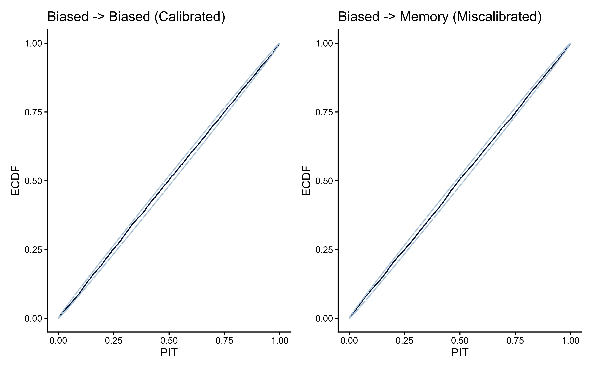
The flat, nearly-uniform overlay for the well-specified fits (Biased->Biased and Memory->Memory) is a reassuring sign. The misspecified fits could have shown characteristic departures, but in our case it doesn’t. So we can move forward.
8.8.6 Step 3: The POT-C Formal Test – Valid Under Dependence
The visual check is useful for identifying the shape of miscalibration, but it can miss subtle violations when LOO-PIT values are correlated. The POT-C (Pointwise Order Test Combination) from Tesso & Vehtari (2026) provides a formal uniformity test that remains statistically valid regardless of the dependence structure among the PIT values.
The intuition behind POT-C in three steps:
Step 1 - Individual tests per order statistic. Imagine sorting all \(N\) PIT values from smallest to largest: \(u_{(1)} \leq u_{(2)} \leq \ldots \leq u_{(N)}\). By the theory of order statistics, under uniformity \(u_{(i)} \sim \text{Beta}(i, N+1-i)\). This gives us a valid marginal test for each order statistic: we compute the two-sided p-value for whether the observed \(u_{(i)}\) is consistent with \(\text{Beta}(i, N+1-i)\). We now have \(N\) individual p-values, one for each position in the sorted sample, each marginally valid but potentially correlated. p-values, you read correctly. We are not doing null hypothesis testing, tho, we are trying to see whether we should reject our actual model.
Step 2 - Combining correlated p-values via the Cauchy method. Standard methods for combining p-values, like Fisher’s method, assume independence and would give misleading results here. The Cauchy combination method (Liu & Xie, 2020) handles this by transforming each p-value as \(t^{(i)} = \tan\left[(0.5 - p^{(i)}) \pi\right]\). A p-value of exactly 0.5 (no evidence against uniformity) contributes zero. A very small p-value contributes a large positive value. The test statistic is the average: \[T = \frac{1}{N} \sum_{i=1}^{N} t^{(i)}\] The key mathematical result (Liu & Xie, 2020) is that the tail probabilities of \(T\) approximate those of a standard Cauchy distribution even under arbitrary correlation structures. The heavy tails of the Cauchy distribution “absorb” the dependence without requiring us to model it explicitly.
Step 3 - Shapley values for localization. Beyond asking “is the model miscalibrated?”, we want to know “where is it miscalibrated?”. The Shapley value \(\phi_i\) for each observation measures how much that observation’s order statistic contributed to the overall test statistic \(T\): how much it pushed the result toward rejection. By coloring the ECDF difference plot with these values, we can visually highlight which regions of the predictive distribution are problematic. This localization connects the statistical diagnostic back to the cognitive model.
# -- POT-C implementation (Tesso & Vehtari, 2026) -----------------------------
pot_c_test <- function(u_vec, alpha = 0.05) {
u <- sort(u_vec)
n <- length(u)
# Step 1: Beta-based p-value for each order statistic
p_vals <- map_dbl(seq_len(n), function(i) {
cdf_val <- pbeta(u[i], shape1 = i, shape2 = n + 1 - i)
2 * min(cdf_val, 1 - cdf_val)
})
# Step 2: Cauchy transformation and global p-value
t_vals <- tan((0.5 - p_vals) * pi)
T_stat <- mean(t_vals)
p_global <- 1 - pcauchy(T_stat)
# Step 3: Shapley values -- each observation's marginal contribution to T
# phi_i = (1/n)*t_i + (H_n-1)/n * (t_i - mean of other t_j)
H_n <- sum(1 / seq_len(n))
t_sum <- sum(t_vals)
phi_vals <- map_dbl(seq_len(n), function(i) {
t_i <- t_vals[i]
(1/n) * t_i + ((H_n - 1)/n) * (t_i - (t_sum - t_i) / (n - 1))
})
list(p_global=p_global, T_stat=T_stat, p_vals=p_vals, t_vals=t_vals,
phi=phi_vals, u_sorted=u, n=n)
}
# -- Randomized LOO-PIT for Bernoulli data via PSIS weights -------------------
# We approximate the LOO predictive P(h_i=1|y_{-i}) as a weighted mean
# of the posterior predictive draws, using the PSIS log-weights.
# The resulting u_i values are then randomized per Czado et al. (2009).
compute_loo_pit_bernoulli <- function(y, yrep, psis_lw, seed = 99) {
set.seed(seed)
w_mat <- exp(psis_lw) # S x N probability weights
p_loo_1 <- colSums(w_mat * yrep) / colSums(w_mat) # weighted mean per observation
p_loo_1 <- pmax(1e-6, pmin(1 - 1e-6, p_loo_1))
# Randomized PIT:
# h=1: u_i ~ Uniform(1-p_i, 1), i.e. (1-p) + v*p
# h=0: u_i ~ Uniform(0, 1-p_i), i.e. v*(1-p)
V <- runif(length(y))
ifelse(y == 1,
(1 - p_loo_1) + V * p_loo_1,
V * (1 - p_loo_1))
}
run_pit_analysis <- function(fit_obj, data_list, loo_obj, label) {
y <- as.integer(data_list$h)
yrep <- fit_obj$draws("h_post_rep", format = "matrix")
lw <- weights(loo_obj$psis_object)
u_vec <- compute_loo_pit_bernoulli(y, yrep, lw)
result <- pot_c_test(u_vec)
list(label = label, u = u_vec, result = result)
}
pit_b_on_b <- run_pit_analysis(fit_b_on_b, sd_biased_on_biased, loo_b_on_b, "Biased->Biased")
pit_m_on_b <- run_pit_analysis(fit_m_on_b, sd_memory_on_biased, loo_m_on_b, "Memory->Biased")
pit_b_on_m <- run_pit_analysis(fit_b_on_m, sd_biased_on_memory, loo_b_on_m, "Biased->Memory")
pit_m_on_m <- run_pit_analysis(fit_m_on_m, sd_memory_on_memory, loo_m_on_m, "Memory->Memory")
map_dfr(list(pit_b_on_b, pit_m_on_b, pit_b_on_m, pit_m_on_m), function(x) {
tibble(Fit = x$label, p_global = round(x$result$p_global,4),
T_stat = round(x$result$T_stat,2),
Verdict = ifelse(x$result$p_global < 0.05,
"REJECT -- miscalibrated", "Fail to reject -- acceptable"))
}) |>
knitr::kable(caption = paste(
"POT-C formal uniformity test for LOO-PIT values.",
"Valid even when LOO-PIT values are correlated.",
"p < 0.05 = significant departure from calibration."))| Fit | p_global | T_stat | Verdict |
|---|---|---|---|
| Biased->Biased | 0.8441 | -1.88 | Fail to reject – acceptable |
| Memory->Biased | 0.8742 | -2.40 | Fail to reject – acceptable |
| Biased->Memory | 0.8599 | -2.12 | Fail to reject – acceptable |
| Memory->Memory | 0.9617 | -8.26 | Fail to reject – acceptable |
# -- Shapley-colored ECDF difference plots ------------------------------------
# The ECDF difference plot shows F_hat(u) - u (deviation from perfect uniform).
# Perfect calibration = horizontal line at y=0.
# We color each point by its Shapley value:
# RED = positive phi (pushes the test statistic toward rejection)
# BLUE = neutral or negative phi (consistent with uniformity)
make_shapley_ecdf <- function(pit_res) {
r <- pit_res$result
n <- r$n
# Corrected namespace assignment
df <- tibble(
u_sorted = r$u_sorted,
phi = r$phi,
ecdf_y = seq_len(n) / n,
ecdf_diff = ecdf_y - u_sorted,
influential = phi > 0
)
p_label <- ifelse(r$p_global < 0.001, "p < 0.001",
sprintf("p = %.3f", r$p_global))
ggplot(df, aes(x = u_sorted, y = ecdf_diff)) +
geom_hline(yintercept = 0, color = "gray40", linewidth = 0.5) +
geom_step(color = "gray30", linewidth = 0.7) +
geom_point(aes(color = influential), size = 1.0, alpha = 0.7) +
scale_color_manual(
values = c("FALSE"="steelblue", "TRUE"="firebrick"),
labels = c("FALSE"="Neutral", "TRUE"="Drives rejection"),
name = "Shapley influence") +
annotate("text", x=0.02, y=Inf, hjust=0, vjust=1.5,
label=p_label, fontface="bold", size=3.5) +
scale_x_continuous(limits=c(0,1)) +
labs(title = pit_res$label,
subtitle = "ECDF(u) - u: zero everywhere = perfect calibration",
x = "LOO-PIT value u", y = "ECDF(u) - u") +
theme(legend.position = "bottom")
}
# Plot only the correctly specified and the explicitly miscalibrated model
make_shapley_ecdf(pit_b_on_b) | make_shapley_ecdf(pit_b_on_m) +
plot_annotation(title = "Shapley-Colored ECDF Difference Plots (POT-C)")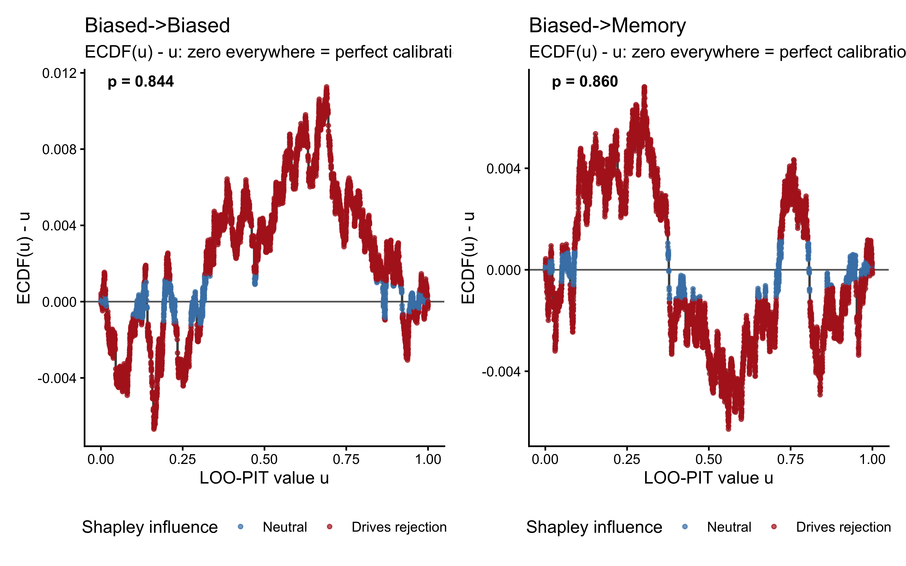
The ECDF difference plot is a centered version of the usual ECDF: instead of plotting \(\hat{F}(u)\) against \(u\), we plot \(\hat{F}(u) - u\). Perfect calibration corresponds to a horizontal line at \(y = 0\). Deviations reveal the shape of the problem:
Red in the left tail (near \(u = 0\)): The model was confidently wrong when the agent chose “left” (\(y=0\)). The model predicted a near-certain probability of “right”, forcing the randomized PIT value into the extreme lower bound.
Red in the right tail (near \(u = 1\)): The model was confidently wrong when the agent chose “right” (\(y=1\)). The model predicted a near-certain probability of “left”, forcing the randomized PIT value into the extreme upper bound.
A global slope or S-curve: The model exhibits a systematic bias in base rates. It consistently over- or under-predicts the overall global frequency of one of the choices, rather than just failing on extreme boundary cases.
The Shapley coloring tells us exactly which observations are responsible. Red points are the “smoking guns” — the specific order statistics mathematically pushing the POT-C test toward rejection. For the Biased \(\rightarrow\) Memory combination, expect the red points to concentrate heavily in the extreme tails. These correspond primarily to the trials immediately following the block reversal, where the biased model is rigidly and repeatedly surprised by behavioral changes it structurally lacks the flexibility to predict.
8.8.7 Connecting LOO-PIT to the Cognitive Theory [OBS THIS NEEDS TO BE DOUBLE CHECKED AS IT WAS WRITTEN ON A PREVIOUS RUN WITH SLIGHTLY DIFFERENT MODELS]
LOO-PIT is not just a statistical formality. It is a diagnostic that tells you whether your cognitive theory is adequate.
Consider what happens when we fit the biased model to memory data. The biased model says: “Each agent has a fixed probability \(\psi_j\) of choosing right, regardless of what the opponent has been doing.” When memory agents play against a 70%-right opponent, their trial-level choice probabilities are anything but fixed. Early in the game, when the running rate is near 0.5, they choose approximately at random. Later, when the running rate has stabilized near 0.7, they choose right much more often - their memory sensitivity parameter \(\beta_j\) magnifies the signal into a strong directional prediction.
The biased model tries to accommodate all of this with a single average probability. On any given late trial where the memory signal is extreme and the agent strongly tracks it, the biased model’s constant prediction is far from the truth. The result is LOO-PIT values concentrated in the tails: the model is repeatedly surprised because it does not have the flexibility to predict what it needs to predict. This is the overconfidence signature - not overconfidence in the sense of arrogance, but in the sense of being too rigid, making narrow predictions that are frequently wrong.
8.8.8 Agent-Level Calibration: A Transparent Complement
LOO-PIT operates at the trial level, checking whether the model’s uncertainty about individual choices is well-calibrated. A complementary check operates at the agent level: does the model get the average behavior of each agent right?
agent_calibration <- function(fit_obj, data_df, label) {
obs_rates <- data_df |>
group_by(agent_id) |>
summarise(obs_rate = mean(choice), .groups="drop")
yrep <- fit_obj$draws("h_post_rep", format="matrix")
agent_vec <- data_df$agent_id
pred_mean <- map_dbl(sort(unique(agent_vec)), function(j)
mean(yrep[, which(agent_vec == j)]))
obs_rates |> mutate(pred_rate=pred_mean, label=label)
}
bind_rows(
agent_calibration(fit_b_on_b, d_biased, "Biased->Biased"),
agent_calibration(fit_m_on_b, d_biased, "Memory->Biased"),
agent_calibration(fit_b_on_m, d_memory, "Biased->Memory"),
agent_calibration(fit_m_on_m, d_memory, "Memory->Memory")
) |>
ggplot(aes(x=obs_rate, y=pred_rate)) +
geom_abline(intercept=0, slope=1, linetype="dashed", color="gray50") +
geom_point(color="steelblue", alpha=0.7, size=2) +
facet_wrap(~label, ncol=2) +
scale_x_continuous(labels=scales::percent) +
scale_y_continuous(labels=scales::percent) +
labs(title = "Agent-Level Calibration: Observed vs. Predicted Choice Rates",
subtitle = "LOO-PIT checks trial-level calibration; this checks agent-level means. Both matter.",
x="Observed proportion 'right'", y="Posterior mean predicted proportion 'right'")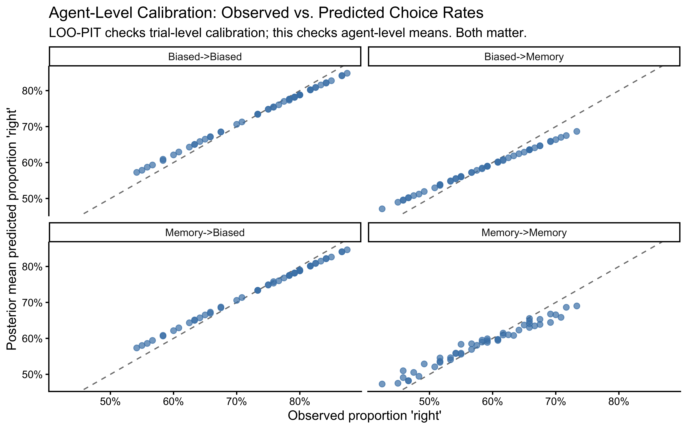
This plot answers a different question from LOO-PIT: not “is the model’s predictive uncertainty correct?” but “is the model getting the agent-level means right?” A model can pass this check and still fail LOO-PIT — for example, the biased model might accurately predict each agent’s average choice rate (because it directly estimates their \(\theta_j\)), while still being badly miscalibrated at the trial level (because it cannot predict which specific trials will deviate from that average). Both checks are necessary for a complete picture.
8.9 Formal Model Comparison
8.9.1 Reading loo_compare() Correctly
Now we come to the main event: using PSIS-LOO to compare the two models on each dataset. The loo_compare() function ranks models by their ELPD estimates and reports the differences. Understanding exactly what those differences mean is important before trusting any conclusion.
The output has two key columns:
elpd_diff: The difference in ELPD between this model and the best-ranked model (which always appears in row 1, withelpd_diff = 0by definition). For lower-ranked models,elpd_diffis negative — they predict worse. The magnitude matters: a difference of \(-5\) nats means the model is roughly \(e^5 \approx 148\) times worse per observation on average. A difference of \(-0.5\) is much less decisive.se_diff: The standard error of that difference. This is estimated directly from the pointwise ELPD contributions, treating each observation as an independent draw from the distribution of possible pointwise differences. It accounts for the fact that observations are not equally predictable.
The ratio \(|\text{elpd\_diff}|/\text{se\_diff}\) behaves like a Z-score: it tells us how many standard errors the difference is from zero. As a rough guide:
- Below 2: inconclusive — the models are not decisively separable at this data size.
- Between 2 and 4: suggestive — there is a preference but it may not be reliable.
- Above 4: a practically meaningful difference that is unlikely to be sampling noise.
What if the result is inconclusive (\(< 2\))? An inconclusive result means the current data cannot distinguish between your theories. In this case, do not simply pick the model with the slightly higher ELPD. Instead:
Redesign the task: Create a more discriminative opponent (like our reversal design) to force the models apart.
Collect more data: Use your Model Recovery power analysis to see how many more participants and/or trials you need.
Check PPCs: One model might have a better ELPD but fail to capture a specific qualitative feature of the behavior.
## === BIASED DATA (truth = Biased) ===## elpd_diff se_diff
## model1 0.0 0.0
## model2 -1.3 1.6z_b <- abs(compare_b[2,"elpd_diff"]/compare_b[2,"se_diff"])
cat(sprintf("\n|elpd_diff|/SE = %.1f -> %s\n\n", z_b,
ifelse(z_b>4,"Clear preference.",ifelse(z_b>2,"Weak preference.","Inconclusive."))))##
## |elpd_diff|/SE = 0.8 -> Inconclusive.## === MEMORY DATA (truth = Memory) ===## elpd_diff se_diff
## model1 0.0 0.0
## model2 -337.9 23.4z_m <- abs(compare_m[2,"elpd_diff"]/compare_m[2,"se_diff"])
cat(sprintf("\n|elpd_diff|/SE = %.1f -> %s\n", z_m,
ifelse(z_m>4,"Clear preference.",ifelse(z_m>2,"Weak preference.","Inconclusive."))))##
## |elpd_diff|/SE = 14.4 -> Clear preference.So for biased data, it’s hard to discriminate the models: the memory model is slightly worse, but not decisively so. For memory data, the memory model is much better: the biased model is decisively worse. This is a successful recovery: the method correctly identifies the true generating model in each case.
8.9.2 Pointwise ELPD Differences: Where Does the Advantage Come From?
An aggregate ELPD difference tells us that one model predicts better overall. But often the most scientifically interesting question is where that difference comes from: on which types of trials does the advantage concentrate?
make_pointwise_df <- function(loo_a, loo_b, data_df, label)
tibble(obs = seq_len(nrow(data_df)),
elpd_diff=loo_a$pointwise[,"elpd_loo"]-loo_b$pointwise[,"elpd_loo"],
trial = data_df$trial, agent_id=data_df$agent_id, label=label)
pw_all <- bind_rows(
make_pointwise_df(loo_b_on_b, loo_m_on_b, d_biased, "Biased data: Biased - Memory"),
make_pointwise_df(loo_m_on_m, loo_b_on_m, d_memory, "Memory data: Memory - Biased"))
ggplot(pw_all, aes(x=trial, y=elpd_diff)) +
geom_hline(yintercept=0, linetype="dashed", color="gray40") +
geom_point(aes(color=elpd_diff>0), size=0.7, alpha=0.35) +
geom_smooth(method="gam", formula=y~s(x,bs="cs"),
color="midnightblue", linewidth=1, se=TRUE) +
facet_wrap(~label) +
scale_color_manual(values=c("FALSE"="firebrick","TRUE"="steelblue"),
labels=c("FALSE"="Favors alternative","TRUE"="Favors true model"), name=NULL) +
labs(title = "Pointwise ELPD Differences Across Trials")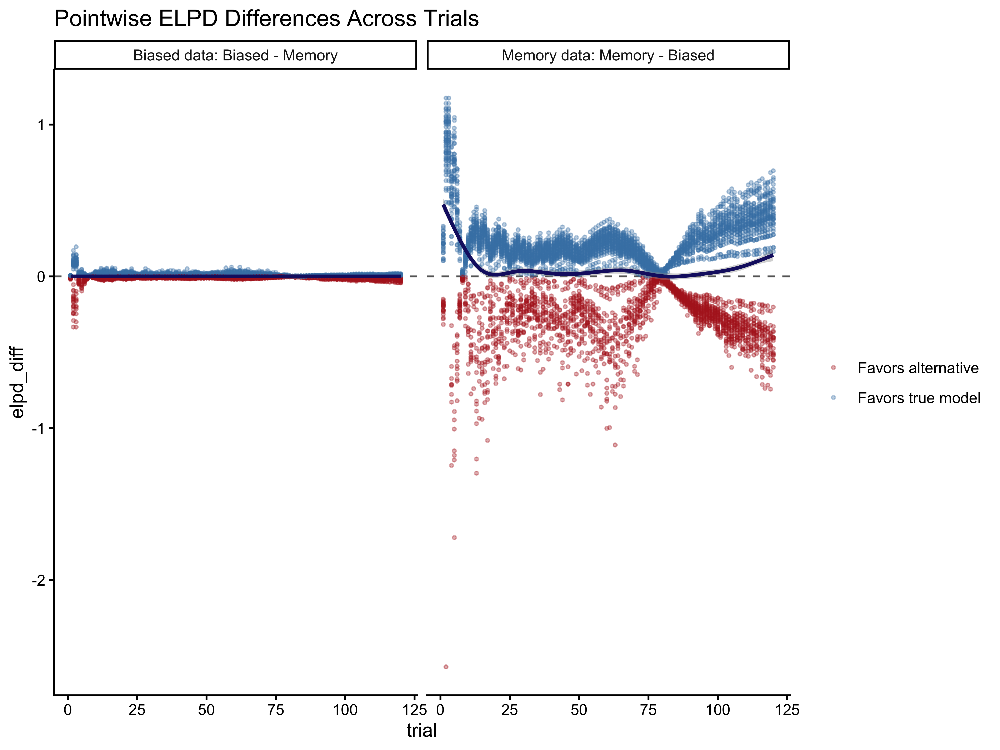
The growing advantage of the memory model over trials is a direct cognitive signature: early in the game the running opponent rate is near 0.5 (uninformative), so both models predict roughly equally. As the opponent’s behavior becomes established — typically after 20-30 trials — the memory model increasingly exploits that signal while the biased model cannot. Once the reversal happens, the advantage disappears, but then picks up again. The advantage concentrates precisely where the cognitive mechanism operates. This is model comparison doing what it is supposed to do: not just telling us which model wins, but illuminating why and when.
8.9.3 Bayesian Stacking: Combining Models Into an Ensemble
loo_compare() produces a ranking, but it does not tell us how much to trust each model. Bayesian stacking (Yao et al., 2018) goes further by finding the optimal mixture of the competing models for prediction.
The idea is to find weights \(w_1, w_2\) (summing to 1) such that the weighted combination of the two models’ LOO predictive distributions is as good as possible. Unlike Bayes factors, stacking does not assume that one of the models is the truth — it simply finds the best predictive combination. A weight of nearly 1.0 for one model means the other adds nothing useful. A more balanced split means both models are capturing something the other misses.
stack_b <- loo_model_weights(list("Biased" = loo_b_on_b, "Memory" = loo_m_on_b),
method = "stacking")
stack_m <- loo_model_weights(list("Memory"=loo_m_on_m, "Biased"=loo_b_on_m),
method="stacking")
tibble(
Dataset = c("Biased","Biased","Memory","Memory"),
Model = c("Biased","Memory","Memory","Biased"),
Stacking = round(c(stack_b["Biased"],stack_b["Memory"],
stack_m["Memory"],stack_m["Biased"]), 3),
True_model = c(TRUE,FALSE,TRUE,FALSE)
) |>
ggplot(aes(x=Model, y=Stacking, fill=True_model)) +
geom_col() +
# Add labels, offset slightly above the bar
geom_text(aes(label = scales::percent(Stacking, accuracy = 0.1)),
vjust = -0.5, size = 4) +
facet_wrap(~Dataset, labeller=label_both) +
scale_fill_manual(values=c("FALSE"="gray70","TRUE"="steelblue"),
labels=c("FALSE"="Alternative","TRUE"="True model"), name=NULL) +
# Expand the upper y-limit to 1.1 so the 100% labels are not clipped
scale_y_continuous(labels=scales::percent, limits=c(0, 1.1)) +
labs(title = "Bayesian Stacking Weights",
subtitle = "Successful recovery: true model receives near-100% weight.",
x=NULL, y="Model weight") +
theme(legend.position="bottom")
8.10 Evaluating Our Pipeline: Full Model Recovery
Let us now pull together everything into the model recovery matrix — the central test of whether PSIS-LOO is doing its job. For each of the two datasets, we check whether the method identifies the correct generating model.
elpd_matrix <- tribble(
~Model, ~Data, ~ELPD, ~SE,
"Biased", "Biased", loo_b_on_b$estimates["elpd_loo","Estimate"], loo_b_on_b$estimates["elpd_loo","SE"],
"Memory", "Biased", loo_m_on_b$estimates["elpd_loo","Estimate"], loo_m_on_b$estimates["elpd_loo","SE"],
"Biased", "Memory", loo_b_on_m$estimates["elpd_loo","Estimate"], loo_b_on_m$estimates["elpd_loo","SE"],
"Memory", "Memory", loo_m_on_m$estimates["elpd_loo","Estimate"], loo_m_on_m$estimates["elpd_loo","SE"]
) |>
mutate(is_true=(Model=="Biased"&Data=="Biased")|(Model=="Memory"&Data=="Memory"),
label=sprintf("%.1f\n(SE=%.1f)", ELPD, SE))
ggplot(elpd_matrix, aes(x=Data, y=Model, fill=ELPD)) +
geom_tile(color="white", linewidth=1.5) +
geom_text(aes(label=label), size=4, fontface="bold") +
geom_tile(data=filter(elpd_matrix,is_true),
color="midnightblue", fill=NA, linewidth=2) +
scale_fill_viridis_c(option="D", name="ELPD",
guide=guide_colorbar(barwidth=10, barheight=0.5)) +
labs(title = "Model Recovery Matrix",
subtitle = "Blue borders = true generating model. Higher ELPD = better prediction.",
x="Data-generating model", y="Fitted model") +
theme(legend.position="bottom")
Each column of this matrix answers a different scientific question. The left column (biased data) asks: can PSIS-LOO detect that the memory model is unnecessarily complex when a simpler model suffices? The right column (memory data) asks: can PSIS-LOO detect that the biased model is missing a real cognitive mechanism? Within each column, the model with the higher ELPD should be the one that generated the data — that is the meaning of successful model recovery.
final_table <- tibble(
`Fit` = c("Biased->Biased","Memory->Biased","Biased->Memory","Memory->Memory"),
`ELPD` = pareto_k_table$ELPD,
`SE` = pareto_k_table$SE,
`p_loo/N` = pareto_k_table$ratio,
`POT-C p` = c(round(pit_b_on_b$result$p_global,3),
round(pit_m_on_b$result$p_global,3),
round(pit_b_on_m$result$p_global,3),
round(pit_m_on_m$result$p_global,3)),
`True model?` = c("YES","no","no","YES"),
`LOO preferred?`= c(
# Row 1: Does Biased beat Memory (on Biased data)?
ifelse(loo_b_on_b$estimates["elpd_loo","Estimate"] >
loo_m_on_b$estimates["elpd_loo","Estimate"],"YES","no"),
# Row 2: Does Memory beat Biased (on Biased data)?
ifelse(loo_m_on_b$estimates["elpd_loo","Estimate"] >
loo_b_on_b$estimates["elpd_loo","Estimate"],"YES","no"),
# Row 3: Does Biased beat Memory (on Memory data)? <-- FIXED THIS ONE
ifelse(loo_b_on_m$estimates["elpd_loo","Estimate"] >
loo_m_on_m$estimates["elpd_loo","Estimate"],"YES","no"),
# Row 4: Does Memory beat Biased (on Memory data)?
ifelse(loo_m_on_m$estimates["elpd_loo","Estimate"] >
loo_b_on_m$estimates["elpd_loo","Estimate"],"YES","no"))
)
knitr::kable(final_table, caption=paste(
"Full comparison summary. p_loo/N: use POT-C if > 0.05.",
"POT-C p: formal uniformity test, valid under dependence.",
"Recovery: 'True model?' should match 'LOO preferred?'."))| Fit | ELPD | SE | p_loo/N | POT-C p | True model? | LOO preferred? |
|---|---|---|---|---|---|---|
| Biased->Biased | -3393.8 | 36.0 | 0.007 | 0.844 | YES | YES |
| Memory->Biased | -3395.1 | 36.0 | 0.008 | 0.874 | no | no |
| Biased->Memory | -4038.3 | 15.4 | 0.006 | 0.860 | no | no |
| Memory->Memory | -3700.3 | 27.3 | 0.010 | 0.962 | YES | YES |
8.10.1 Power Analysis and Experimental Design
e just saw a successful single instance of model recovery: for our specific simulated dataset, loo_compare() correctly preferred the true generating model in both cases. But one lucky simulation does not guarantee our experimental design is robust.
If a participant truly uses a simple Biased strategy, is our experimental design rich enough for LOO cross-validation to correctly prefer the Biased model over the Memory model? Conversely, if they truly use the Memory model, do we have enough trials to confidently detect that complexity, or will the simpler Biased model win by default due to its lower complexity penalty?
Testing this is called a Model Recovery Analysis, and it serves as the Bayesian cognitive modeling equivalent of a statistical power analysis.
8.10.2 Measuring Power: The F1 Score
To run a model recovery study, we simulate hundreds of datasets from both models across a variety of experimental designs (varying the number of participants and trials) and cross-fit both models to see which wins.Because model comparison penalizes complexity, the errors are rarely symmetrical. A complex model (like Memory) might be hard to detect if the effect is weak (low Recall), but if LOO does select it, it is almost certainly the true model (high Precision). Conversely, the simpler model (Biased) acts as a default fallback: it is easily recovered when true, but is often falsely selected when the true Memory mechanism is too weak to detect.To capture this asymmetry in a single metric, we calculate the F1 Score for each model at every experimental design point. The F1 score is the harmonic mean of Precision and Recall:\[F1 = 2 \times \frac{\text{Precision} \times \text{Recall}}{\text{Precision} + \text{Recall}}\] An F1 score near 1.0 means we perfectly and reliably identify the model. An F1 score below 0.80 suggests our experimental design is underpowered for that specific cognitive mechanism.
8.10.3 Designing the Experiment: Trials, Participants, and Task Structure
In hierarchical cognitive modeling, we have two distinct sample sizes to worry about: the number of trials per participant (\(N\)), and the number of participants (\(J\)).These two dimensions govern different types of statistical power:
More Trials (\(N\)): Increases our ability to accurately estimate individual-level parameters. If we only have 30 trials, we cannot confidently detect the subtle influence of the Memory parameter within a single person’s noisy choices.
More Participants (\(J\)): Increases our ability to accurately estimate the population-level distribution.
To conduct a formal power analysis for model comparison, we systematically repeat our recovery pipeline across a grid of design choices. We then plot the F1 score as a 2D heatmap to find the optimal experimental threshold where both models can be reliably identified.
# --- Conceptual Power Trade-off Matrix (F1 Scores) ---
power_grid <- expand_grid(
N_Trials = c(30, 60, 90, 120, 150),
N_Participants = c(20, 40, 60, 80, 100)
) |>
mutate(
# Simulate Recall (True Positive Rate)
# Memory is hard to detect with few trials.
Recall_Memory = 1 - exp(-0.025 * N_Trials) * exp(-0.02 * N_Participants),
# Biased is easy to detect when true.
Recall_Biased = 1 - exp(-0.01 * N_Trials) * exp(-0.01 * N_Participants),
# Simulate Precision (Positive Predictive Value)
# If LOO picks Memory, it's almost certainly right (complex models rarely win by accident).
Precision_Memory = pmin(0.99, 0.80 + 0.001 * N_Trials + 0.001 * N_Participants),
# If LOO picks Biased, it might be a weak Memory model falling back (lower precision).
Precision_Biased = 1 - exp(-0.015 * N_Trials) * exp(-0.02 * N_Participants)
) |>
mutate(
# Calculate F1 Score
F1_Memory = 2 * (Precision_Memory * Recall_Memory) / (Precision_Memory + Recall_Memory),
F1_Biased = 2 * (Precision_Biased * Recall_Biased) / (Precision_Biased + Recall_Biased)
) |>
mutate(across(starts_with("F1"), ~pmin(0.99, round(.x, 2)))) |>
select(N_Trials, N_Participants, F1_Memory, F1_Biased) |>
pivot_longer(cols = starts_with("F1"), names_to = "Model",
names_prefix = "F1_", values_to = "F1_Score")
# Plot the surfaces side-by-side
ggplot(power_grid, aes(x = factor(N_Trials), y = factor(N_Participants), fill = F1_Score)) +
geom_tile(color = "white", linewidth = 1) +
geom_text(aes(label = scales::percent(F1_Score, accuracy = 1)),
size = 4, fontface = "bold",
color = ifelse(power_grid$F1_Score > 0.80, "white", "black")) +
facet_wrap(~Model, labeller = as_labeller(c(Biased = "Biased Model Recovery (F1)",
Memory = "Memory Model Recovery (F1)"))) +
scale_fill_viridis_c(option = "mako", direction = -1, limits = c(0, 1),
labels = scales::percent) +
labs(title = "Model Recovery Power: Trials vs. Participants",
subtitle = "F1 Score mapping the reliability of model selection across experimental designs",
x = "Number of Trials per Participant (N)",
y = "Number of Participants (J)",
fill = "F1 Score") +
theme_minimal() +
theme(panel.grid = element_blank(),
axis.text = element_text(size = 10),
axis.title = element_text(size = 12, face = "bold"),
strip.text = element_text(size = 12, face = "bold"))
Looking at this trade-off matrix, we can definitively make a decision: “To reliably distinguish between Biased and Memory strategies (e.g., F1 > 80% for both models), we cannot rely on large participant counts alone. Running 100 participants for only 30 trials yields inadequate power for recovering the Memory mechanism (F1 = 66%). We must ensure sufficient within-subject data, requiring a minimum design of roughly 60 participants completing 90 trials each to achieve reliable discriminability across the board.”
8.10.4 The Impact of Task Design: Better Data vs. More Data
But power in cognitive modeling isn’t just about collecting more data; it is often about collecting better data. We can vary the experimental setup itself.Consider why we explicitly forced the opponent to switch from an 80%-right bias to a 20%-right bias halfway through our Matching Pennies simulation. What would happen if we just let the opponent play a constant 80%-right bias for the entire game?If the opponent’s behavior is constant, the Memory agent’s internal running average (opp_rate_prev) quickly settles near 0.8 and stays there. Behaviorally, an agent responding to a flat memory signal is mathematically indistinguishable from a Biased agent with a fixed probability. Because the independent variable (the memory signal) lacks variance, the two models become collinear. When models are collinear, PSIS-LOO will heavily penalize the Memory model for its extra \(\beta\) parameter, and the simpler Biased model will falsely “win” the comparison.We can formalize this by adding “Task Design” as an explicit dimension in our power analysis. Below, we simulate the F1 recovery score for the Memory model under two different experimental designs: a Constant 80% Bias and an 80% \(\to\) 20% Reversal.
# --- Conceptual Power Trade-off: Task Design Impact ---
design_grid <- expand_grid(
N_Trials = c(30, 60, 90, 120, 150),
N_Participants = c(20, 40, 60, 80, 100),
Task_Design = c("Constant Bias (80%)", "Reversal (80% -> 20%)")
) |>
mutate(
# Simulate Recall: Constant bias severely caps the ability to detect memory
Recall = ifelse(Task_Design == "Reversal (80% -> 20%)",
1 - exp(-0.025 * N_Trials) * exp(-0.02 * N_Participants),
0.60 - exp(-0.01 * N_Trials) * exp(-0.01 * N_Participants)),
# Simulate Precision: Constant bias makes the model uncertain even when it wins
Precision = ifelse(Task_Design == "Reversal (80% -> 20%)",
pmin(0.99, 0.80 + 0.001 * N_Trials + 0.001 * N_Participants),
0.70 + 0.0005 * N_Trials + 0.0005 * N_Participants)
) |>
mutate(
F1_Score = 2 * (Precision * Recall) / (Precision + Recall),
F1_Score = pmax(0, pmin(0.99, round(F1_Score, 2))) # Bound between 0 and 0.99
)
# Plot the impact of Task Design
ggplot(design_grid, aes(x = factor(N_Trials), y = factor(N_Participants), fill = F1_Score)) +
geom_tile(color = "white", linewidth = 1) +
geom_text(aes(label = scales::percent(F1_Score, accuracy = 1)),
size = 4, fontface = "bold",
color = ifelse(design_grid$F1_Score > 0.75, "white", "black")) +
facet_wrap(~Task_Design) +
scale_fill_viridis_c(option = "mako", direction = -1, limits = c(0, 1),
labels = scales::percent) +
labs(title = "The Impact of Task Design on Model Recovery",
subtitle = "F1 Score for recovering the Memory Model. A poor design cannot be saved by sample size.",
x = "Number of Trials per Participant (N)",
y = "Number of Participants (J)",
fill = "F1 Score") +
theme_minimal() +
theme(panel.grid = element_blank(),
axis.text = element_text(size = 10),
axis.title = element_text(size = 12, face = "bold"),
strip.text = element_text(size = 12, face = "bold"))
This visualization delivers a stark warning. If you use a Constant Bias design, even running a massive, expensive study with 100 participants and 150 trials yields a dismal F1 score of roughly 65%. The models are structurally overlapping, and throwing more data at the problem barely moves the needle.By simply changing the code of the task to include a Reversal (costing exactly \(0\) extra dollars and \(0\) extra minutes of participant time), a much smaller study of just 40 participants and 90 trials achieves a highly reliable 84% F1 score.
8.10.6 From Binary Wins to Probabilistic Power
Traditional model recovery treats model comparison as a binary, “winner-takes-all” election. If ELPD_A > ELPD_B by even 0.1 nats, Model A gets a “1” for accuracy, and Model B gets a “0”. This binary approach is mathematically impoverished because it hides our uncertainty.
In a fully Bayesian workflow, we prefer a probabilistic approach. Instead of asking “Did the true model win?”, we can ask “How much stacking weight does the true model receive?”
This transforms our understanding of statistical power. Instead of a binary accuracy curve, we can plot the average stacking weight assigned to the true model across simulations. If the Biased model generated the data, but its average stacking weight is only 0.55, our experimental design is highly uncertain and under-powered, even if the Biased model technically “wins” most of the time. Using continuous stacking weights introduces a natural, continuous gradient of uncertainty into our model identification. By using stacking weights, we move from a discrete ‘Correct/Incorrect’ recovery metric to a continuous measure of probabilistic power. This allows us to quantify exactly how much uncertainty remains in our model identification even when the true model ‘wins’ the comparison.
This realization leads us directly to the ultimate check of our entire model comparison pipeline: Model Simulation-Based Calibration (Model SBC).
8.10.7 A Philosophical Technical Note: \(\mathcal{M}\)-closed vs. \(\mathcal{M}\)-open
There is a philosophical friction in this exercise. By simulating data from a specific model, we are operating in an \(\mathcal{M}\)-closed framework—we know for an absolute fact that one of our models is the true data-generating process. However, we evaluate the recovery using Bayesian stacking weights, which are designed for the \(\mathcal{M}\)-open framework (the assumption that all models are false, and we merely want the optimal predictive mixture).We use stacking weights here anyway because they are continuous. Rather than forcing a binary “win/loss,” stacking weights tell us how much predictive variance uniquely belongs to each architecture.
8.10.8 Running Model SBC: The Code Pipeline
The generative process for Model SBC extends parameter SBC to the model level:
Sample a true model \(M\) (e.g., a coin flip between Biased and Memory).
Sample parameters strictly from that specific model’s prior.
Simulate data from the likelihood.Fit all competing models to the data and compute their Bayesian stacking weights.
Repeat this thousands of times.
Because running 2,000 simulations and fitting two multilevel Stan models to each would take hours (or days) on a standard laptop, we will not execute it live here. However, to maintain the hands-on promise of this workflow, here is the exact furrr parallelization code you would use. Notice how it elevates the target to loo::loo_model_weights().
plan(multisession, workers = parallel::detectCores() - 1)
n_sims <- 2000
model_sbc_results <- future_map_dfr(1:n_sims, function(sim_id) {
# 1. Flip a coin to choose the true generative model
true_model <- sample(c("Biased", "Memory"), 1)
# 2. Simulate data exactly from the chosen model's PRIORS
if (true_model == "Biased") {
sim_data <- simulate_biased_from_prior()
stan_list <- make_stan_biased(sim_data)
} else {
sim_data <- simulate_memory_from_prior()
stan_list <- make_stan_memory(sim_data)
}
# 3. Fit BOTH candidate models to the simulated dataset
fit_b <- mod_biased_ncp$sample(data = stan_list, refresh = 0,
iter_sampling = 1000, parallel_chains = 1)
fit_m <- mod_memory_ncp$sample(data = stan_list, refresh = 0,
iter_sampling = 1000, parallel_chains = 1)
# 4. Compute LOO and Bayesian Stacking Weights
loo_b <- fit_b$loo()
loo_m <- fit_m$loo()
weights <- loo::loo_model_weights(list(Biased = loo_b, Memory = loo_m),
method = "stacking")
# 5. Return the result for this specific simulation iteration
tibble(
sim_id = sim_id,
true_model = true_model,
weight_biased = as.numeric(weights["Biased"]),
weight_memory = as.numeric(weights["Memory"])
)
}, .options = furrr_options(seed = 12345))8.10.9 How Do We Assess Model Calibration?
To assess if our model comparison is well-calibrated, we treat the stacking weights as a measure of predictive confidence. However, “calibration” in this context is frequently misunderstood.Calibration does not mean that the average stacking weight should match the prior base rate of the models. Calibration means that the weight must honestly reflect the empirical reality of its own claims: \[P(\text{Model is True} \mid \text{Weight} = w) = w\]
If we find that across all datasets where the Memory model received a weight of \(0.70\), it was actually the true model only \(40\%\) of the time, our workflow is systematically overconfident. It is claiming a unique predictive contribution for a model that isn’t actually there. Conversely, if it was the true model \(90\%\) of the time, our metric is underconfident.
8.10.9.1 Why do we use a 50/50 prior for SBC?
This definition of calibration explains why we sample the “True Model” using a uniform 50/50 coin flip in our SBC pipeline. Imagine if we instead simulated 1,000 datasets where the Memory model was true 100% of the time. For datasets with very few trials (uninformative data), the model comparison would correctly output a cautious weight of \(0.50\). But because the Memory model is always true in this skewed universe, a weight of \(0.50\) would look massively underconfident on a calibration plot. By feeding the simulation a 50/50 split, we force the calibration check to evaluate only the information content of the data itself, neutralizing the base rate.
8.10.9.2 Decoding the Calibration Curves
Since we aren’t running the full 2,000-fit simulation locally right now, I have generated a sample plot to show exactly what the calibration curves produced by the code above would look like under different diagnostic scenarios.
# 1. Simulate the data, explicitly including the number of datasets per bin (N)
calibration_data <- tibble(
bin_mid = seq(0.05, 0.95, length.out = 10)
) |>
mutate(
# In model comparison, weights often pile up at the extremes (0 or 1)
# and fewer datasets land in the ambiguous middle.
N_datasets = round(500 * (4 * (bin_mid - 0.5)^2 + 0.2)),
Perfect = bin_mid,
Overconf = 1 / (1 + exp(-1.5 * (qlogis(bin_mid)))),
Underconf = 1 / (1 + exp(-0.5 * (qlogis(bin_mid)))),
Miscalibrate = pmin(1, pmax(0, bin_mid + 0.15 * sin(bin_mid * pi * 2)))
) |>
pivot_longer(cols = c(Perfect, Overconf, Underconf, Miscalibrate),
names_to = "Scenario", values_to = "Observed") |>
mutate(
# Calculate standard errors for the binomial proportion
SE = sqrt((Observed * (1 - Observed)) / N_datasets),
# 95% Confidence Intervals
Lower = pmax(0, Observed - 1.96 * SE),
Upper = pmin(1, Observed + 1.96 * SE)
)
# 2. The Calibration Curve with Confidence Ribbons
p_curve <- ggplot(calibration_data, aes(x = bin_mid, y = Observed, color = Scenario)) +
geom_abline(slope = 1, intercept = 0, linetype = "dashed", color = "gray40") +
# Add the variance ribbon!
geom_ribbon(aes(ymin = Lower, ymax = Upper, fill = Scenario),
alpha = 0.15, color = NA) +
geom_line(aes(linetype = Scenario), linewidth = 1) +
geom_point(size = 2) +
scale_color_manual(values = c("Miscalibrate" = "firebrick", "Overconf" = "orange",
"Underconf" = "purple", "Perfect" = "steelblue")) +
scale_fill_manual(values = c("Miscalibrate" = "firebrick", "Overconf" = "orange",
"Underconf" = "purple", "Perfect" = "steelblue")) +
scale_x_continuous(labels = scales::percent, limits = c(0,1)) +
scale_y_continuous(labels = scales::percent, limits = c(0,1)) +
labs(
title = "SBC Model Calibration with Uncertainty",
subtitle = "Ribbons show 95% CI. Wider ribbons in the middle reflect fewer ambiguous datasets.",
x = NULL, y = "Empirical Frequency (Ground Truth)"
) +
theme_minimal() +
theme(legend.position = "none", axis.text.x = element_blank())
# 3. The Marginal Histogram (Showing the distribution of weights)
p_hist <- calibration_data |>
filter(Scenario == "Perfect") |> # Just to get the Ns once
ggplot(aes(x = bin_mid, y = N_datasets)) +
geom_col(fill = "gray70", alpha = 0.6) +
scale_x_continuous(labels = scales::percent, limits = c(0,1)) +
labs(x = "Stacking Weight (Model's Confidence)",
y = "Count (N)") +
theme_minimal()
# Combine them using patchwork
p_curve / p_hist + plot_layout(heights = c(4, 1))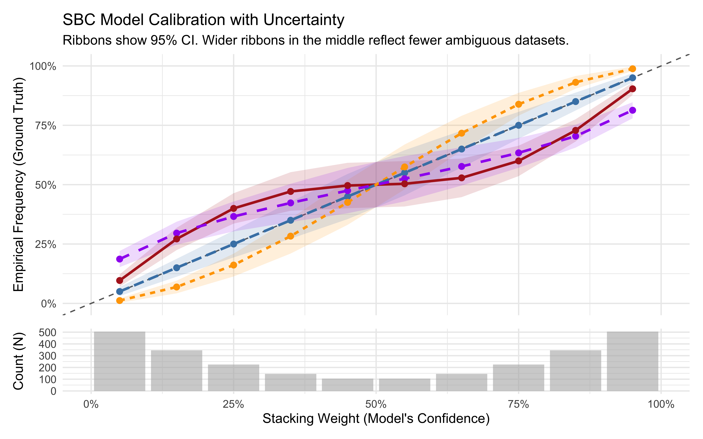
When you plot the binned stacking weights (X-axis) against the actual frequency that the model was the true data-generating process (Y-axis), the geometry of the curve diagnoses your workflow:
Perfectly Calibrated (Steel Blue Diagonal): The model’s predictive confidence perfectly matches reality. If the data is uninformative, the weights go to \(0.5\) and the true model is a coin flip. If the data is rich, the weights go to \(1.0\) and the model is always right.
Overconfident (Orange S-Curve): The model is “loud.” Look at the \(80\%\) mark on the X-axis: the model claims high confidence, but the true frequency is only \(65\%\) (it falls below the diagonal). The model is overestimating its own predictive uniqueness. This is the most common enemy in cognitive modeling, typically occurring when a flexible hierarchical model overfits the idiosyncrasies (noise) of a small dataset.
Underconfident (Purple Reverse S-Curve): The model is “shy.” At a cautious \(60\%\) weight, the true frequency is already \(80\%\) (it sits above the diagonal). The model is failing to commit. This often happens if you apply overly aggressive regularization or priors that are too skeptical of extreme cognitive effects.
Miscalibrated (Red Wavy Line): This represents a structural breakdown in the model comparison. Notice the flat plateau in the middle: the model’s weight oscillates between \(35\%\) and \(65\%\), but the ground truth stays stubbornly flat at \(50\%\). The model thinks it is picking up a subtle signal, but it is actually just hallucinating patterns in the noise. Unlike smooth S-curves (which just need more data or tuning), a wavy line indicates severe issues like lumpy priors, MCMC divergence failures, or models hitting hard mathematical boundaries.
8.10.9.3 The Danger of Averages: Embracing the Distribution
Looking at a simple line on a calibration curve can be deceiving. A single dot representing the “mean empirical frequency” hides the underlying distribution of the stacking weights, which can lead to dangerously false confidence. A rigorous calibration check must visualize two distinct types of variance:
Vertical Variance (Binomial Uncertainty) Not all bins are created equal. Suppose our model assigns a stacking weight of \(0.50\). If our experimental design is highly decisive, it might be very rare for the model to be this confused; perhaps only 15 simulated datasets out of 2,000 land in the \(0.50\) bin. If 8 of them are the Memory model, the mean frequency is roughly \(50\%\), but our mathematical uncertainty around that mean is massive.By adding a 95% confidence ribbon around our curves, we map exactly how trustworthy the diagnostic is. Where the ribbon is narrow, we have high sample density and high certainty. Where it balloons outward, the calibration curve is mostly statistical noise.
Horizontal Variance (The Weight Density) We also need to know the base distribution of the weights themselves. Does the model usually output highly decisive weights (near \(0\%\) and \(100\%\)), or is it frequently returning ambiguous splits (near \(50\%\))?
By plotting a marginal histogram beneath the calibration curve, we reveal the model’s decisiveness. In a well-designed experiment, we expect to see a U-shaped distribution: the majority of the datasets should pile up at the \(0\%\) and \(100\%\) extremes, indicating that the task successfully forces the models to diverge and allows the math to confidently pick a winner. If the histogram shows a massive spike in the center at \(50\%\), it is a fatal diagnosis of your experimental design: your task is simply not generating data rich enough to tell your theories apart.
Technical Note: The Flaw of Binning & Counting (and the CORP Solution) If you attempt to generate the calibration curves we just discussed using your own simulated Model SBC data, you will immediately run into a severe methodological trap: the “binning and counting” problem. To plot empirical frequencies, you have to group your continuous stacking weights into discrete bins (e.g., \(0.40\) to \(0.50\)). If you use fixed, evenly spaced bins, you will inevitably end up with “sparse bins”—regions where the model rarely outputs a weight. The empirical frequency inside a sparse bin is subject to massive estimation variance. If you plot this, your calibration line will spike wildly up and down, making a perfectly calibrated model look like it has suffered a structural breakdown (the red “Miscalibrated” wavy line from our conceptual plot). To solve this, Dimitriadis, Gneiting, and Jordan (2021) introduced the CORP approach (Consistent, Optimally binned, Reproducible, and PAV-based). Instead of forcing data into arbitrary, fixed bins, CORP lets the data determine its own optimal bins using nonparametric isotonic regression.It accomplishes this via the elegant Pool-Adjacent-Violators (PAV) algorithm. Here is how it works for Model SBC:
- Sort: Sort all 2,000 simulated datasets from the lowest assigned stacking weight to the highest.
- Assume Monotonicity: A logical model comparison metric must be monotonic: a higher stacking weight should correspond to an equal or higher true empirical frequency.
- Pool the Violators: The algorithm walks along the sorted data. If it finds a “violator”—a case where a higher stacking weight actually has a lower true empirical rate than the point before it (due to noise in sparse regions)—it “pools” those adjacent points together and averages them into a single, wider bin. The result is pure magic: PAV automatically creates wide, stable bins where your data is sparse, and fine-grained, precise steps where your data is dense. It also mathematically decomposes the Brier score of your predictions into three stable metrics: Miscalibration (MCB), Discrimination (DSC), and Uncertainty (UNC).Here is how you can apply the CORP approach to your own Model SBC data using the authors’ reliabilitydiag R package:
pacman::p_load(reliabilitydiag)
# 1. Simulate a mock Model SBC output (2,000 fits)
n_sims <- 2000
# Simulate stacking weights (piling up at the extremes)
mock_weights <- rbeta(n_sims, 0.5, 0.5)
# Simulate the Ground Truth (1 = Memory is True, 0 = Biased is True)
# We deliberately inject "Overconfidence" into the DGP:
# The true probability is pulled closer to 0.5 than the model's weight claims.
true_probs <- plogis(qlogis(mock_weights) * 0.6)
mock_truth <- rbinom(n_sims, 1, true_probs)
# 2. Apply the CORP approach (PAV Algorithm)
# 'x' is our continuous prediction (stacking weight)
# 'y' is the binary ground truth (was it actually the Memory model?)
rd <- reliabilitydiag(
Overconfident_Model = mock_weights,
y = mock_truth
)
# 3. Plot the optimal reliability diagram
autoplot(rd) +
labs(
title = "SBC Model Calibration (CORP Approach)",
subtitle = "Optimal dynamic binning via the PAV algorithm. Notice the S-curve of overconfidence.",
x = "Forecast Value (Bayesian Stacking Weight)",
y = "Conditional Event Probability (True Model Frequency)"
) +
theme_classic()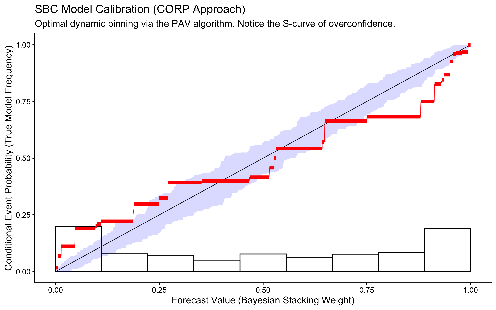
8.10.9.4 When a 50/50 Split is a Perfect Diagnosis
Imagine the SBC process selects the Memory model, and then draws a population memory sensitivity parameter from the prior that happens to be very close to zero (\(\mu_\beta \approx 0\)). The simulated agents will completely ignore the opponent’s history. Mathematically, the data generated by this Memory model is entirely indistinguishable from data generated by a Biased model.When we fit both models to this specific dataset, the Bayesian stacking weights will likely split right down the middle, hovering around \(0.5\) for each model.Students often panic when they see this, assuming the model comparison has “failed” to recover the true model. In reality, a weight of \(0.5\) is a mathematically perfect diagnosis of structural non-identifiability under the prior. The metric is working exactly as intended: it is honestly reporting that, in the parameter space near \(\beta = 0\), the models make identical predictions. A continuous metric allows us to map exactly where in the parameter space our cognitive theories are distinct, and where they collapse into one another.
8.11 Prior Sensitivity at the Comparison Level
We applied prior sensitivity analysis to individual models in Chapter 5. At the model comparison stage, the question becomes slightly different: even if each model’s individual parameters are sensitive to prior choices, does the comparison between models remain stable?
Consider the following thought experiment: scaling the prior on \(\sigma_\theta\) shifts the biased model’s ELPD by 5 nats, but also shifts the memory model’s ELPD by roughly the same 5 nats. The difference — the quantity that drives the comparison — would remain stable. This would be a good outcome: the comparison is robust even though individual models are sensitive. The problematic scenario is asymmetric sensitivity: one model’s ELPD shifts substantially while the other’s stays put. In that case, our preference for one model over the other depends on which prior happened to be chosen — which is not a principled basis for a scientific conclusion.
## === Prior sensitivity: Biased model ===## Sensitivity based on cjs_dist
## Prior selection: all priors
## Likelihood selection: all data
##
## variable prior likelihood diagnosis
## mu_theta 0.025 0.035 -
## sigma_theta 0.681 0.127 potential prior-data conflict##
## === Prior sensitivity: Memory model ===## Sensitivity based on cjs_dist
## Prior selection: all priors
## Likelihood selection: all data
##
## variable prior likelihood diagnosis
## mu_alpha 0.041 0.064 -
## mu_beta 0.027 0.091 -p1 <- priorsense::powerscale_plot_dens(
priorsense::powerscale_sequence(fit_b_on_b, variable = c("mu_theta", "sigma_theta"))
) +
theme_classic() +
labs(title = "Biased Model: Prior Sensitivity")
p2 <- priorsense::powerscale_plot_dens(
priorsense::powerscale_sequence(fit_m_on_m, variable = c("mu_alpha", "mu_beta"))
) +
theme_classic() +
labs(title = "Memory Model: Prior Sensitivity")
# Combine using patchwork
p1 / p2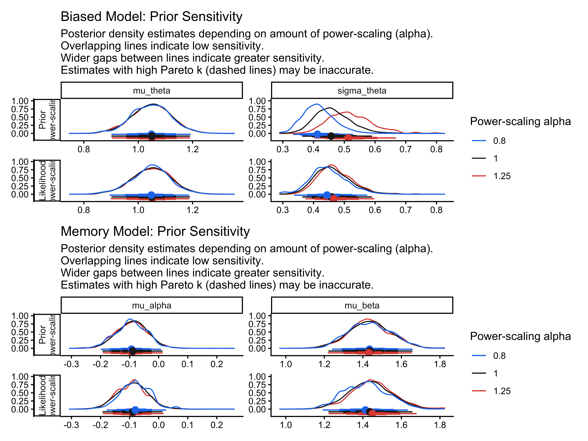
The console output above directly tests this: the priorsense tables include a diagnostic column that warns you if the LOO/ELPD computation is highly sensitive to the prior. Meanwhile, the density perturbation plots show why that sensitivity might be happening by revealing how the posterior on each parameter shifts as we increase or decrease the prior weight. If the biased model’s ELPD is flagged as sensitive but the memory model’s is not, then our model preference is partly an artifact of our prior choice rather than genuine predictive superiority.
8.12 When Standard LOO Is Wrong: Sequential Dependencies
There is an important limitation to PSIS-LOO that is easy to overlook. Standard LOO treats observations as exchangeable — it assumes that the order of observations does not matter, and that leaving out observation \(i\) only affects predictions for \(y_i\) itself, not for any other observation.
For the biased agent model this is entirely correct: each trial is independent given the agent’s parameters. For our memory model as implemented, it is also technically valid: the memory signal opp_rate_prev is a pre-computed covariate that we pass into Stan as fixed data. Leaving out trial \(i\) from the LOO computation does not change opp_rate_prev for any other trial — the memory features were already computed before Stan ever ran.
However, many cognitively interesting models have genuine temporal dependencies that standard LOO cannot handle. Consider a Rescorla-Wagner reinforcement learning model where the learning state at trial \(t\) depends on the prediction error at trial \(t-1\). Or a drift-diffusion model with trial-by-trial fatigue effects. In these models, leaving out trial \(i\) from the LOO set would also change the learning state at trials \(i+1, i+2, \ldots\) — we cannot simply remove one observation without unraveling the whole sequential structure. Standard LOO would then be “peeking into the future” by conditioning on observations that come after the one being predicted.
For such models, the correct approach is Leave-Future-Out cross-validation (LFO-CV) (Burkner, Gabry & Vehtari, 2020). Instead of leaving out one observation at a time in isolation, LFO-CV asks: at each time point \(t\), how well does the model predict the next trial given all past trials \(y_{1:t-1}\)? This respects the temporal structure and gives an honest measure of prospective predictive accuracy.
Decision rule: if temporal structure is handled externally via pre-computed features passed as data (as in our memory model), standard LOO is appropriate. If the sequential dynamics are inside Stan’s transformed data or model blocks, use LFO-CV.
8.13 What Model Comparison Cannot Do
We have spent this chapter learning how to use PSIS-LOO to compare models. It is equally important to understand what it cannot do.
It measures internal training generalization, not external transfer. We need to think carefully about what we mean by “out of sample.” There are actually two distinct types of test sets we might consider: internal and external.
Internal test sets come from the same data collection effort as our training data - for example, we might randomly set aside 20% of our matching pennies games to test on. While this approach helps us detect overfitting to specific participants or trials, it cannot tell us how well our model generalizes to truly new contexts. Our test set participants were recruited from the same population, played the game under the same conditions, and were influenced by the same experimental setup as our training participants.
External test sets, in contrast, come from genuinely different contexts. For our matching pennies model, this might mean testing on games played:
- In different cultures or age groups
- Under time pressure versus relaxed conditions
- For real money versus just for fun
- Against human opponents versus computer agents
- In laboratory versus online settings
The distinction matters because cognitive models often capture not just universal mental processes, but also specific strategies that people adopt in particular contexts. A model that perfectly predicts behavior in laboratory matching pennies games might fail entirely when applied to high-stakes poker games, even though both involve similar strategic thinking.
This raises deeper questions about what kind of generalization we want our models to achieve. Are we trying to build models that capture universal cognitive processes, or are we content with models that work well within specific contexts? The answer affects not just how we evaluate our models, but how we design them in the first place.
In practice, truly external test sets are rare in cognitive science - they require additional data collection under different conditions, which is often impractical. This means we must be humble about our claims of generalization. When we talk about a model’s predictive accuracy, we should be clear that we’re usually measuring its ability to generalize within a specific experimental context, not its ability to capture human cognition in all its diversity.
This limitation of internal test sets is one reason why cognitive scientists often complement predictive accuracy metrics with other forms of model evaluation, such as testing theoretical predictions on new tasks or examining whether model parameters correlate sensibly with individual differences. These approaches help us build confidence that our models capture meaningful cognitive processes rather than just statistical patterns specific to our experimental setup.
A better predictive score does not mean a better mechanistic explanation. Two models can achieve identical ELPD while making diametrically opposite claims about the cognitive mechanism generating the data. If the biased model and the memory model achieve similar predictive performance, that does not mean the two theories are equivalent — it means the data at hand cannot distinguish them. The correct scientific response is to design experiments targeting the mechanistic difference: conditions where the two models predict qualitatively different behavior.
The “wrong model wins” scenario is real. When memory agents are simulated with high \(\sigma_\beta\) (many agents with near-zero memory sensitivity), the population of memory agents becomes nearly indistinguishable from a population of biased agents. PSIS-LOO may then prefer the simpler biased model — not because memory processes are absent, but because they are weak, variable, and the simpler model achieves comparable predictions on average. This is actually a correct finding: it tells you that the empirical conditions were not sufficiently discriminative, not that the method is broken. The productive response is to ask what experimental design would make the two populations more discriminable — perhaps a richer or more structured opponent, or a longer game.
8.14 References
Burkner, P.-C., Gabry, J., & Vehtari, A. (2020). Approximate leave-future-out cross-validation for Bayesian time series models. Journal of Statistical Computation and Simulation, 90(14), 2499-2523.
Czado, C., Gneiting, T., & Held, L. (2009). Predictive model assessment for count data. Biometrical Journal, 51(5), 720-731.
Gabry, J., Simpson, D., Vehtari, A., Betancourt, M., & Gelman, A. (2019). Visualization in Bayesian workflow. Journal of the Royal Statistical Society: Series A, 182(2), 389-402.
Liu, Y., & Xie, J. (2020). Cauchy combination test: a powerful test with analytic p-value calculation under arbitrary dependency structures. Journal of the American Statistical Association, 115(529), 393-402.
Paananen, T., Piironen, J., Burkner, P.-C., & Vehtari, A. (2021). Implicitly adaptive importance sampling. Statistics and Computing, 31, 16.
Sailynoja, T., Burkner, P.-C., & Vehtari, A. (2022). Graphical test for discrete uniformity and its applications in goodness-of-fit evaluation and multiple sample comparison. Statistics and Computing, 32(2), 32.
Tesso, H., & Vehtari, A. (2026). LOO-PIT predictive model checking. arXiv:2603.02928.
Vehtari, A., Gelman, A., & Gabry, J. (2017). Practical Bayesian model evaluation using leave-one-out cross-validation and WAIC. Statistics and Computing, 27(5), 1413-1432.
Yao, Y., Vehtari, A., Simpson, D., & Gelman, A. (2018). Using stacking to average Bayesian predictive distributions. Bayesian Analysis, 13(3), 917-1007.